Intern-NCP 团队
上海人工智能实验室；上海交通大学 LUMIA 实验室
https://huggingface.co/collections/ArchSpace-Collection/ncp-archpreview
https://github.com/InternLM/lmdeploy
https://github.com/LUMIA-Group/ncp_olmo_eval
我们介绍 NCP-ArchPreview，这是一种潜在空间语言模型，将自回归预训练推进到标准下一 token 预测（NTP）之外。在 NTP 的同时，模型通过下一概念预测（NCP）学习预测跨越多个 token 的离散概念，在保留标准 token 级自回归生成的同时，引入显式且更具挑战性的概念级目标。NCP-ArchPreview 直接从隐藏状态构建经过乘积量化的概念词表，从而建立潜在空间，随后通过专门的概念模块学习预测未来概念。这些预测概念再反馈到 token 层面，指导后续生成，NTP 与 NCP 以端到端方式联合训练。我们将该架构扩展到 8.9B 参数，并在 Dolma-3 数据集的 5.73T token 上进行训练，这是迄今规模最大的潜在空间语言模型展示。值得关注的是，仅消耗总训练 token 的 51.3%，NCP-ArchPreview 就达到了 OLMo-3-7B 的最终预训练损失。完成全部预训练后，它在下游宏平均分上比 OLMo-3-7B 高出 2.45 分，其中 GSM8K 提高了 5.99 分。受控实验分离并揭示了来自潜在架构和 NCP 目标的清晰、递进的性能提升。此外，NCP-ArchPreview 仅使用标准计算量的 85%，就接近了参数严格对齐的 8.9B 基线的训练损失。学得的潜在空间在预训练阶段结束后仍具有很高价值：只更新 17M 参数的 VQ 模块，就能得到一种用于领域适配的新颖轻量接口；而将概念表示简单注入 DFlash2 草稿模型，以可忽略的开销将平均接受长度提高了 4.17%。这些结果证明了在大规模下联合建模 token 和概念的可行性，使潜在空间预测不仅成为辅助目标，更成为下一代基础模型高效且可扩展的架构蓝图。我们发布每隔 100,000 个训练步获得的 Stage-1 checkpoint、对应的草稿模型，以及最终 Stage-1 / Stage-2 checkpoint。
生成式 AI 的近期进展表明，模型学习所处的表示空间可能与参数规模同样重要。在视觉合成中，潜在扩散将生成过程从原始像素转移到紧凑的连续表示中，极大地提高了建模效率与可扩展性 [Blattmann et al., 2023, Rombach et al., 2022]。现代语言模型同样在其……（接下页）
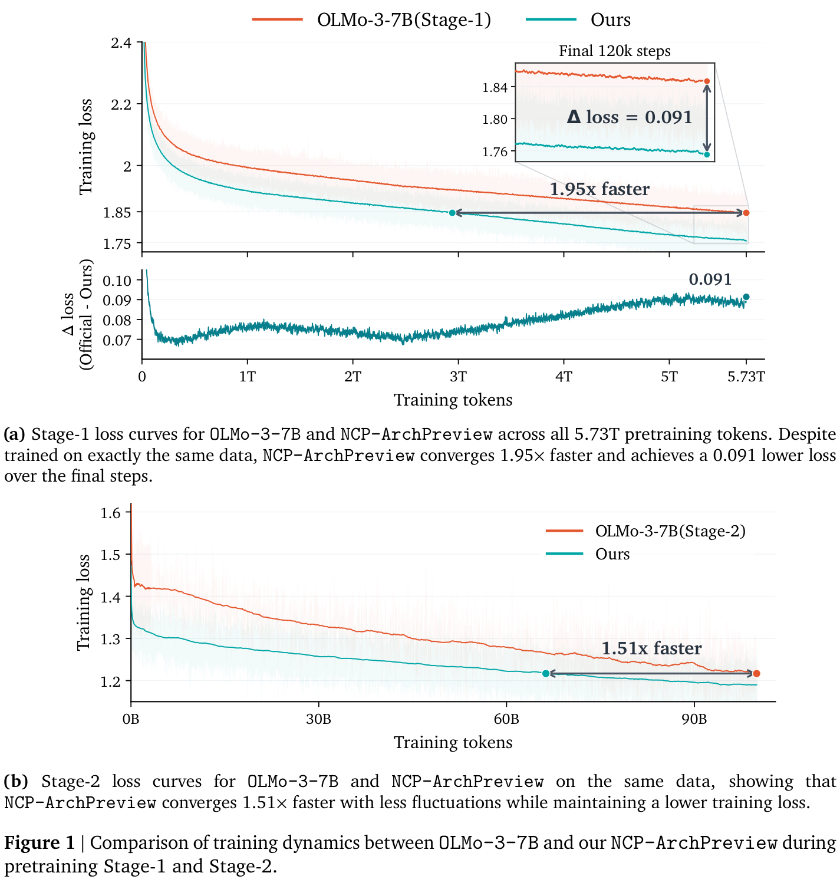
（接上页）隐藏状态中形成语义概念和潜在世界表示等高层抽象 [Gurnee and Tegmark, 2024, Li et al., 2023, Park et al., 2024]。然而，在标准下一 token 预测（NTP）下，这些抽象纯粹作为间接副产物出现：监督严格局限于细粒度 token，缺少显式目标来指导语义结构如何在跨多个 token 的片段中展开。为弥合这一差距，我们引入 NCP-ArchPreview，一种新颖的潜在空间基础模型架构，将对跨多个 token 的离散概念的直接预测纳入预训练阶段。通过联合使用 NTP 和下一概念预测（NCP）进行预训练，NCP-ArchPreview 将潜在空间语言建模扩展到 5.73T 预训练 token，在前沿规模下确立了这一范式的架构可行性与可扩展性。
先前的架构探索可从两个维度区分：潜在表示如何……（接下页）
（接上页）形成，以及训练它们去表示什么。在潜在表示方面，Hourglass Transformer [Nawrot et al., 2022]、ContextLM [Dai et al., 2025] 和 MegaByte [Yu et al., 2023] 使用固定的层级结构，具有预定义的多尺度分辨率或字节块。相比之下，Byte Latent Transformer（BLT）[Pagnoni et al., 2025]、DLCM [Qu et al., 2025] 和 H-Net [Hwang et al., 2026] 使用动态或随输入自适应的分块方式，允许潜在边界或块大小随输入变化。另一类方法引入新的潜在预测目标或训练目标。Large Concept Model [Barrault et al., 2024] 在共享的连续句子 embedding 空间中预测表示；ConceptLM [Liu et al., 2026] 则从学得的概念词表中预测离散概念。
联合 embedding 预测架构（JEPA）[LeCun et al., 2022] 提供了一种具有原则依据的替代方案：直接在潜在空间中预测未来表示，以捕获不变的语义结构。这一范式推动了图像表示学习（I-JEPA）[Assran et al., 2023] 和大规模视频建模（V-JEPA 与 V-JEPA 2）[Assran et al., 2025, Bardes et al., 2024] 的突破。然而在语言建模中，显式基于潜在目标进行学习仍缺乏探索。尽管多 token 预测（MTP）[Gloeckle et al., 2024] 对多个未来位置施加监督，其损失仍与各个表层 token 绑定。NCP-ArchPreview 通过下一概念预测（NCP）[Liu et al., 2026] 将这一原则拓展到语言建模，直接在学得的概念词表上预测潜在表示。
NCP-ArchPreview 基于 OLMo-3-7B 主干 [Olmo et al., 2026]，构建了该架构的 8.9B 参数实现。它在 16 层 token 编码器与 16 层 token 解码器之间插入一个 8 层概念模块，采用乘积量化构建表达能力丰富的离散概念空间，并引入从 MUDDFormer [Xiao et al., 2025] 改编而来的多路动态稠密连接，以实现层级残差路由。在 5.73T token 上进行的大规模预训练显示出显著的优化效率：NCP-ArchPreview 仅使用 OLMo-3-7B 训练 token 的 51.3%，就达到其最终预训练损失（收敛速度提高 1.95×），预训练后的下游宏平均分比 OLMo-3-7B 高出 2.45 分（GSM8K 提高 5.99 分）。计算量对齐和参数量对齐的消融实验确认，这些收益从根本上来自潜在层级结构与 NCP 目标，而非单纯增加容量，带来了 1.74× 的 Pareto 计算效率提升。在预训练之外，学得的概念空间可作为用于轻量领域适配的高效 17M 参数接口，并且在整合到 DFlash2 speculative 草稿模型 [Inco AI, 2026] 后，以平均接受长度增加 4.17% 的方式加速推理。
为加速非标准基础架构的开源研究，我们随本文正式发布 NCP-ArchPreview 这一经过完整预训练的潜在空间基础模型，包括模型权重、推理脚本、训练配方和中间评测 checkpoint。
在本报告其余部分，我们将全面介绍此次发布的技术细节：第 2 节详述模块化架构与层级残差路由；第 3 节介绍联合 NTP–NCP 训练目标；第 4 节给出万亿 token 预训练、组件消融、scaling laws 和下游评测的实证验证。我们进一步研究训练实践中的考量，包括矩阵优化器下的 attention-logit 稳定化，以及用于中期训练数据筛选、能够感知能力差异的代理指标，随后讨论下游适配机制、多 token 预测的协同作用，以及潜在空间语言建模的未来方向。
我们介绍 NCP-ArchPreview，一种在离散潜在空间中将 token 级建模与概念级预测耦合起来的潜在空间语言模型。我们从中间 token 表示构建离散概念词表，使用概念模块预测未来概念，并将这些预测反馈到 token 流。层级残差进一步混合不同深度与模块之间的信息。以下小节定义这些组件。
我们的模型在标准 NTP 模型中引入潜在空间预测。主干由三个模块组成：token 编码器、概念模块和 token 解码器。token 编码器产生 token 表示，随后模型将连续的 token 组压缩为连续概念表示。概念模块根据先前概念预测下一个概念，而 token 解码器结合预测概念与 token 级表示来预测下一个 token。此外，我们的层级残差连接各个模块内部以及三个模块之间的层，使信息能够跨深度与层级传播。
令 \(k\) 为概念压缩因子，令 \(M=\lfloor T/k\rfloor\)。token 编码器将输入序列映射为 token 级隐藏状态 \(\mathbf h_{1:T}\)。随后，我们对每组 \(k\) 个状态进行均值池化，得到连续概念序列 \(\mathbf c_{1:M}\)。我们使用向量量化（VQ）学习有限概念空间，形成概念词表 [Gray, 1984]。概念模块随后通过码本条目的加权组合，预测下一个概念的可微表示。在注入 token 解码器之前，预测概念序列会在 token 分辨率上重复，并通过移位保持因果性。对应的训练目标见第 3 节。
VQ 目标鼓励码本条目覆盖连续概念表示的分布，从而提供一个结构化预测目标空间。随后，概念模块在这一学得的空间中预测下一个概念。它为每个码本产生一个概率分布，其加权组合给出可微的概念预测。本小节介绍码本学习。
token 编码器是主干中的第一个模块，产生 token 级隐藏状态：
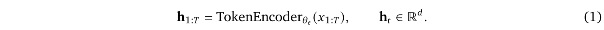
这些隐藏状态有三个用途：供 token 解码器使用；压缩为概念级表示，供概念模块使用；用于学习概念码本。
对于第 \(m\) 个概念，我们使用均值池化聚合一组连续的 \(k\) 个 token 状态：
得到的概念序列长度为 \(M=\lfloor T/k\rfloor\)，相对于 token 序列缩短了 \(k\) 倍。
我们使用 VQ 将每个连续概念表示映射到有限的一组代表向量。为了在不使用巨大单一码本的情况下提高离散概念空间的容量，我们……（接下页）
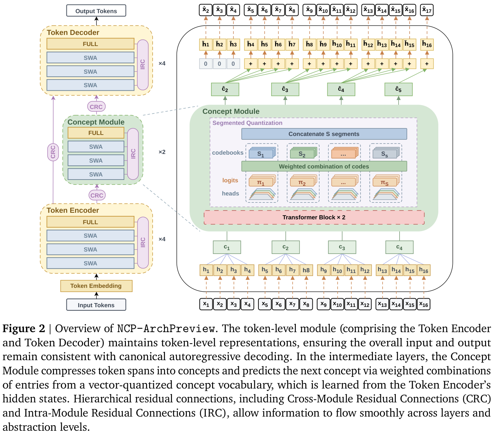
（接上页）采用乘积量化 [Jegou et al., 2010]。每个概念向量划分为 \(S\) 个特征片段：
对于片段 \(s\)，令 \(\mathbf E^s=\{\mathbf e^s_1,\ldots,\mathbf e^s_N\}\) 表示其码本。我们将每个连续片段分配给距离最近的码字：
通过拼接量化后的片段，得到完整的量化概念：
尽管每个片段码本仅包含 \(N\) 个条目，乘积量化仍定义了 \(N^S\) 种可能的片段码字组合。因此，它在保持码本规模较小的同时，大幅提高了离散概念空间的容量。量化损失及其 stop-gradient 操作见第 3 节。
给定第 2.2 节学得的码本，概念模块在得到的结构化潜在空间中自回归地预测下一个概念。训练时，它接收连续概念历史 \(\mathbf c_{<m}\)，并以监督方式学习预测下一个概念。推理时，先前预测的概念以自回归方式反馈。给定历史 \(\mathbf c_{<m}\)，堆叠的 Transformer 层产生一个潜在隐藏状态：
对于每个乘积量化片段 \(s\)，专用于该片段的预测头在码本条目 \(\mathbf E^s\) 上产生一个分布：
我们不取 argmax 或采样码字，而是在这一分布下取期望，形成一个可微的预测片段：
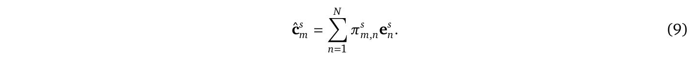
预测概念由所有片段级预测拼接而成：
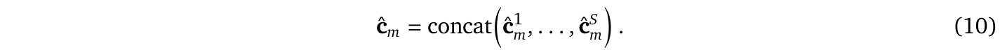
这种加权码字构造让预测路径保持完全可微，同时将其限制在学得的码本的线性组合范围内。因此，得到的 NCP 目标在受约束的潜在空间中监督预测，而非回归到无约束、可自由漂移的连续目标。
预测概念的跨度必须与 token 解码器接收的 token 级状态对齐。我们首先将每个预测概念重复 \(k\) 次，再施加因果移位。令 \(\Delta=k\) 表示我们实现所用的移位量；对于 token 级预测位置 \(t=1,\ldots,T-1\)，token 级概念信号为：
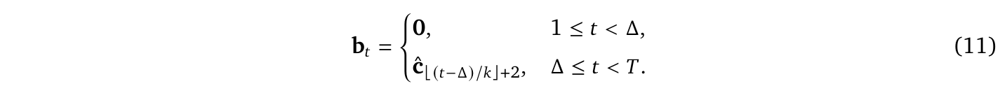
引入移位是为了防止信息泄漏：只有在用于预测某一概念目标的 token 状态处理完毕后，才会注入该预测概念。
概念与 token 隐藏状态具有相同的隐藏维度 \(d\)，因此我们通过逐元素残差相加直接融合这两种 embedding：
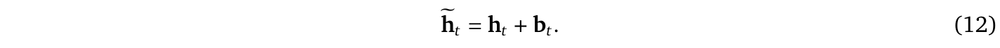
随后，token 解码器根据融合后的状态自回归地预测下一个 token：
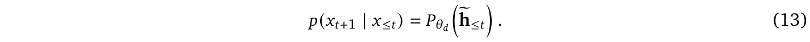
token 编码器、概念模块和 token 解码器运行于不同深度与序列粒度。因此，我们引入层级残差连接，以促进模块内部与模块之间的信息流动。受 MUDDFormer 的动态稠密连接 [Xiao et al., 2025] 启发，我们的设计使用依赖隐藏状态的连接权重，同时在每个模块中保留单一隐藏状态流。所提出的连接包含两个互补组件：模块内残差连接（IRC），组合同一模块内不同层的表示；跨模块残差连接（CRC），在模块之间传递表示。
令 \(s\in\{\mathrm{TokenEncoder},\mathrm{ConceptModule},\mathrm{TokenDecoder}\}\) 表示模块。对于第 \(\ell\) 层，令 \(\mathbf H^s_\ell\) 为其 Transformer 块的输入，令：
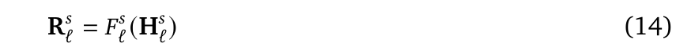
表示残差相加前的块输出。在标准 Transformer 中，下一个隐藏状态通过将块输出加到当前状态上得到：
我们的模块内残差连接（IRC）允许下一个状态组合多个深度的表示，从而推广这种固定的沿深度相加方式。在第 \(\ell\) 层，我们构造候选集合：
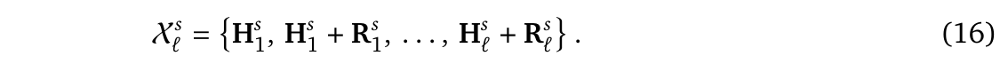
对当前块输出 \(\mathbf R^s_\ell\) 应用一个轻量 MLP，为每个候选状态产生一个系数：
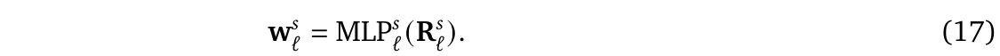
下一个隐藏状态是它们的加权组合：
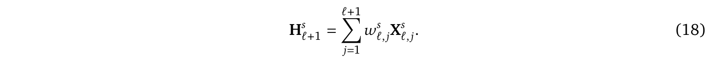
这些系数未经归一化，因此 IRC 能够表示来自不同深度状态的带符号组合。我们将 MLP 初始化为使 \(\mathbf w^s_\ell=[0,\ldots,0,1]\)。因此，IRC 初始时选择最近的、经过残差更新的状态，退化为标准残差连接，而训练可学习纳入更早层的信息。
跨模块残差连接（CRC）在模块之间传递信息。令 \(\mathbf S^u=\{\mathbf S^u_j\}_{j=1}^K\) 表示源模块 \(u\) 导出的表示，并令 \(\mathbf T^s_\ell\) 表示目标模块 \(s\) 的状态。当两个模块运行于不同序列粒度时，首先通过分块或重复对源表示进行对齐。随后，对目标状态应用轻量 MLP，产生覆盖源模块各深度的归一化系数：
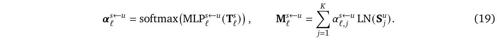
使用学得的对角缩放，将得到的表示加到目标流上：
我们使用三种跨模块连接：
ConceptModule 到 TokenDecoder 的连接采用与预测概念路径相同的因果移位，因此不会暴露未来 token 信息。对角缩放初始化为较小值，使模型起初接近原始主干，随后逐步学习利用额外的跨模块连接。IRC 与 CRC 共同构成层级残差连接机制。
概念模块与 token 级模型联合训练。对于输入序列 \(x_{1:T}\)，token 编码器首先产生 token 级状态 \(\mathbf h_{1:T}\)，第 2.2 节中的池化算子产生连续概念状态 \(\mathbf c_{1:M}\)。VQ 模块为每个概念分配结构化码本表示，概念模块根据概念历史预测下一个概念，而经过因果移位的预测被注入 token 解码器。得到的 token 级与概念级预测对概念路径进行端到端优化。码本、token 编码器、概念模块和 token 解码器由 NTP 与 NCP 目标共同更新。
我们的 VQ 码本为概念预测提供结构化目标空间。对于每个乘积量化片段，码本通过训练拟合连续概念表示的分布：
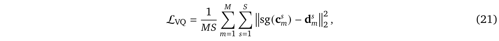
其中，\(\operatorname{sg}(\cdot)\) 表示 stop-gradient，\(\mathbf d^s_m\) 是分配给 \(\mathbf c^s_m\) 的最近码本条目。stop-gradient 操作阻止 VQ 目标更新 token 编码器。因此，这一目标仅使选中的码本条目向连续概念表示移动，让码本跟踪潜在分布，而不直接改变 token 级隐藏状态。
下一概念预测的目标，是在概念层面建模相邻 token 组之间的依赖。由于每个概念概括多个 token 位置，这一目标对跨多个 token 的依赖关系提供监督。在连续概念表示上直接使用回归目标，会允许模型产生表示空间中的任意向量。这种目标只规定与目标之间的距离，并未定义哪些输出构成有效的概念表示。
因此，我们通过学得的 VQ 码本参数化预测。对于每个乘积量化片段，概念模块预测对应码本条目上的概率分布。随后，按照预测分布组合这些条目，得到可微的概念表示。这种设计提供结构化的参考表示集合，同时避免不可微的离散选择步骤。
具体而言，我们使用均方误差目标，训练概念模块预测下一个连续概念：
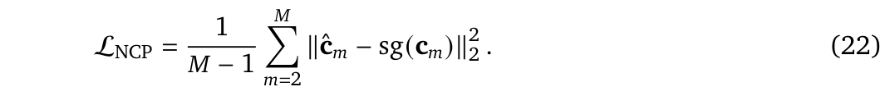
这里，\(\mathbf c_m\) 是由第 \(m\) 个 token 组计算出的连续概念，\(\hat{\mathbf c}_m\) 则根据先前的概念历史预测。
NCP 损失同时更新概念模块与 token 编码器。目标 \(\mathbf c_m\) 被 detach。token 编码器仅通过提供给概念模块的先前概念表示 \(\mathbf c_{<m}\) 接收 NCP gradient。这鼓励 token 编码器保留对预测下一个概念有用的信息。
式 (12) 的融合表示 \(\tilde{\mathbf h}_t\) 使用通常的因果下一 token 目标进行训练：
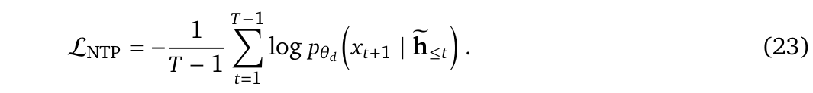
零前缀与移位确保 NTP 损失绝不会以其所监督预测的那些 token 计算出的概念为条件。NTP 为模型的每个权重提供稠密监督。它更新 token 路径与概念路径，同时保留主干的标准自回归语言建模行为。
我们使用以下目标联合优化模型：
其中，\(\mathcal L_{\mathrm{NTP}}\) 训练模型进行下一 token 预测，\(\mathcal L_{\mathrm{NCP}}\) 训练概念模块和 token 编码器进行下一概念预测，\(\mathcal L_{\mathrm{VQ}}\) 将码本条目拟合到连续概念表示。系数 \(\alpha\) 和 \(\beta\) 控制两个辅助目标的权重。这三个目标在训练中联合优化。
对于矩阵参数，我们使用基于 Muon 优化器 [Jordan et al., 2024] 的 Moonlight Muon [Liu et al., 2025]。对于矩阵参数 \(\mathbf W\in\mathbb R^{d_{\mathrm{out}}\times d_{\mathrm{in}}}\)，更新可写为：
其中，\(\mathbf O_t\) 为经过正交化的 Muon 更新，\(\eta_t\) 为学习率调度，\(\lambda_{\mathrm{Muon}}\) 控制更新尺度，\(\lambda_{\mathrm{wd}}\) 表示 weight decay。默认设置使用 \(6\times10^{-5}\) 的学习率，并采用与 Olmo-3-7B 相同的余弦调度器。embedding、偏置和其他非 Muon 参数使用 AdamW 优化；其他参数使用 Muon 优化。
模型与数据集：我们使用 OLMo-3-7B 作为 NCP-ArchPreview 的主干，并遵循 OLMo-3 的分阶段数据课程。第一训练阶段使用 Dolma 3 Mix，第二阶段在 Dolma 3 Dolmino 上继续训练。我们按照 OLMo-Core 实现的 OLMo 评测协议评测所得模型，该协议覆盖 30 个基准系列，包括 MMLU [Hendrycks et al., 2021a]、GSM8K [Cobbe et al., 2021]、MATH-500 [Hendrycks et al., 2021b, Lightman et al., 2023]、HumanEval [Chen et al., 2021]、MBPP [Austin et al., 2021]、ARC [Clark et al., 2018] 和 HellaSwag [Zellers et al., 2019]。这些基准评测事实知识、数学推理、代码生成、常识推理、阅读理解和语言建模。完整任务列表、提示配置和评测指标见附录 E。
对于第 5.1 节的 VQ 训练研究，我们分别在 Magicoder [Wei et al., 2023]、Orca-Math [Mitra et al., 2024] 和 TriviaQA-RC [Joshi et al., 2017] 上继续训练 Stage-1 checkpoint，进行代码、数学和知识适配。目标领域性能的评测使用 HumanEval、MBPP 及其 EvalPlus 变体评测代码 [Austin et al., 2021, Chen et al., 2021]，使用 GSM8K 和 MATH-500 评测数学 [Cobbe et al., 2021, Hendrycks et al., 2021b, Lightman et al., 2023]，使用 TriviaQA 评测知识 [Joshi et al., 2017]。
NCP-ArchPreview 配置：NCP-ArchPreview 保留 OLMo-3-7B 的主要配置，包括 4,096 的隐藏维度、11,008 的 FFN 维度，以及 32 个 attention 头。其 32 层 token 级 Transformer 层平均分为 16 层 token 编码器和 16 层 token 解码器。概念模块由 8 层 Transformer 层组成，采用 4 个 token 的分块大小。VQ 模块包含 32 个码本，每个码本有 128 个条目，每个条目维度为 128。通过每个解码器层中的归一化残差连接引入概念表示。训练目标将标准下一 token 预测损失与 VQ、NCP 损失组合。所得模型约有 8.94B 参数，最大上下文长度为 8,192 token。
我们在前两个训练阶段比较 NCP-ArchPreview 与 OLMo-3-7B。图 1 比较它们的 token 级语言建模损失，表 1 则汇总相同评测协议下的下游性能。总体而言，NCP-ArchPreview 在两个阶段均取得更低的语言建模损失和更高的下游指标宏平均值。
如图 1 所示，NCP-ArchPreview 在整个 Stage-1 和 Stage-2 中的训练损失均低于 OLMo-3-7B。两个模型使用相同数据训练。在 Stage-1 中，随着训练推进，NCP-ArchPreview 与 OLMo-3-7B 之间的损失差距扩大，在阶段末达到 0.091。NCP-ArchPreview 仅消耗 51.3% 的训练 token，就达到 OLMo-3-7B 的最终损失，以训练 token 数计，收敛速度提高 1.95×。这一优化优势在 Stage-2 仍然明显：NCP-ArchPreview 的最终损失低 0.027，且仅使用 66.2% 的训练 token 就达到 OLMo-3-7B 的最终损失，收敛速度提高 1.51×。
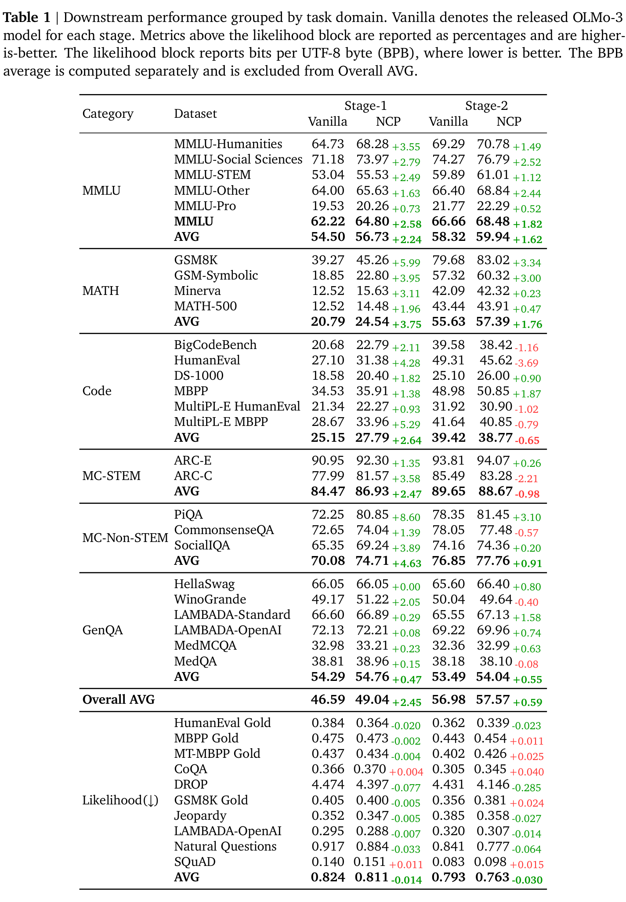
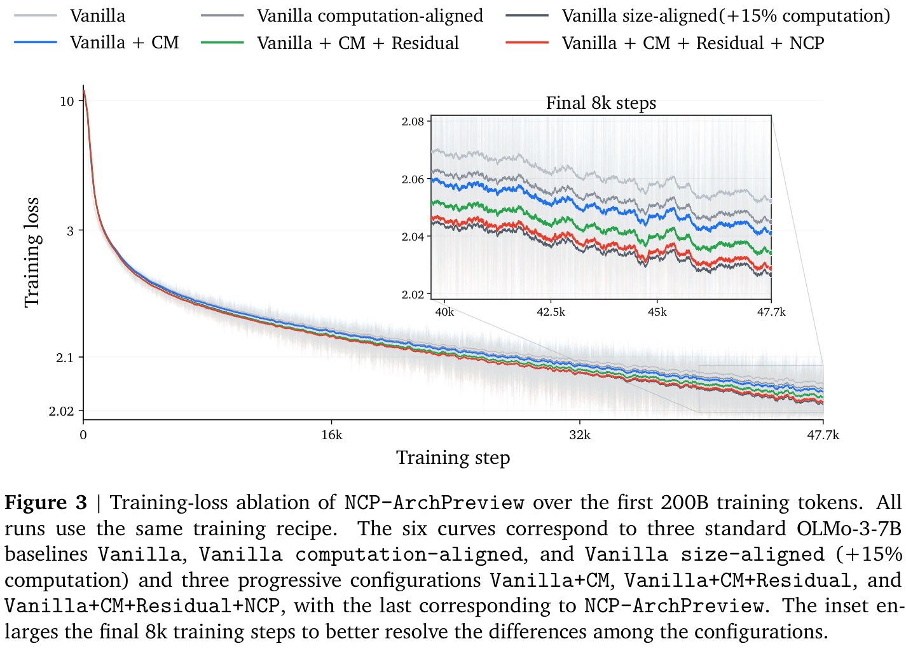
NCP-ArchPreview 在两个阶段的下游任务上都优于 OLMo-3-7B。在 Stage-1，NCP-ArchPreview 在几乎所有评测基准上均超过 OLMo-3-7B，全部评测数据集的平均分高出 2.45 分。MATH、Code 和 MC-Non-STEM 上的提升尤其明显。其中，MATH 的提升最大，达到 18%。这与我们观察到的更低训练损失一致。
在 Stage-2，NCP-ArchPreview 的宏平均分高出 0.59 分，在 MATH、MC-Non-STEM 和 GenQA 上均有提升。然而，Stage-2 仅包含约 10% 的代码数据。因此，对整体混合数据的更好拟合可能提高总体平均分，同时削弱代码等占比较低领域的性能。
我们检查不同训练阶段的训练损失能否准确反映模型能力。在 Stage-1，我们对训练过程中不同时间保存的 checkpoint，在相同下游任务上进行评测（详细下游得分见附录 E）。随着训练推进，损失逐渐降低，下游得分持续提高，表明模型能力在整个训练过程中不断提升。在 Stage-2，我们试验了 V1–V3 三种训练配置。尽管其最终训练损失依次降低，下游性能却依次变差。我们认为，这一现象可能源于 Stage-2 训练数据分布与下游任务数据分布之间的不匹配。在附录 C 中，我们使用代理数据集进一步讨论这一问题。
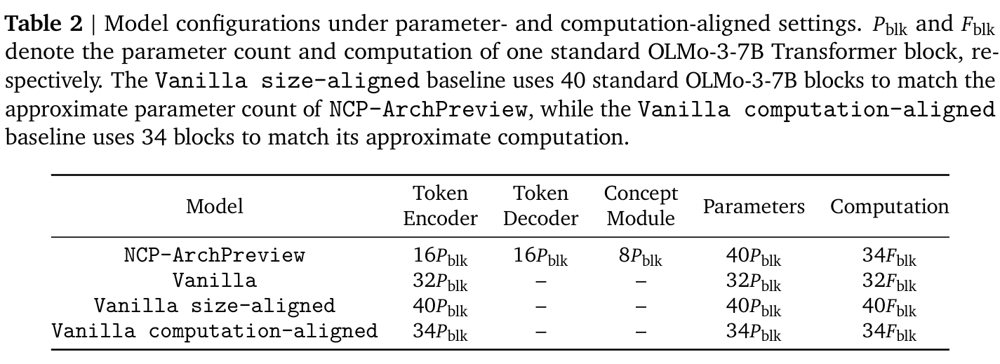
我们对 NCP-ArchPreview 的关键组件进行消融，并与标准 OLMo-3 进行参数量和计算量对齐的比较。具体而言，我们首先将 NCP-ArchPreview 与模型规模对齐、计算量对齐的标准 OLMo-3-7B 模型比较，随后通过逐步引入组件的消融实验，考察概念模块、残差连接和 NCP 损失的贡献。
为评估 NCP-ArchPreview 的提升是否来自所提出的架构，而非仅仅来自额外参数或计算量，我们在相同实验设置下，将其与三个基于 OLMo-3 的基线比较：Vanilla、Vanilla size-aligned 和 Vanilla computation-aligned。
如架构部分所述，概念模块将每四个 token 级隐藏状态分组为一个概念表示，使概念模块的序列长度缩短到原始序列的约四分之一。因此，每个概念模块块引入的参数量与标准 OLMo-3-7B 块大致相同，但计算量仅约为其四分之一。
为清楚起见，我们将一个标准 OLMo-3-7B Transformer 块的参数量和计算量分别记为 \(P_{\mathrm{blk}}\) 和 \(F_{\mathrm{blk}}\)。相应地，一个概念模块块贡献约 \(P_{\mathrm{blk}}\) 参数，但其解析训练 FLOPs 少于标准块的四分之一。由于 VQ 码本和残差组件仅占总参数量与计算量的极小部分，我们在构造对齐基线时忽略它们。详细模型配置见表 2。
如图 3 所示，NCP-ArchPreview 显著优于 Vanilla 和 Vanilla computation-aligned，表明其提升不能仅由额外计算量解释。此外，尽管仅使用 Vanilla size-aligned 计算量的 34/40 = 85%，NCP-ArchPreview 仍接近该基线的性能。
我们进一步通过将关键组件逐步引入标准 OLMo-3-7B 架构，分析这些组件对 NCP-ArchPreview 的贡献。具体而言，我们比较 Vanilla、Vanilla+CM、Vanilla+CM+Residual 和 Vanilla+CM+Residual+NCP，其中 CM 表示……（接下页）
（接上页）概念模块，最终配置对应 NCP-ArchPreview。
如图 3 所示，引入概念模块可相较 Vanilla 改善训练损失。添加残差组件进一步降低损失，加入 NCP 损失又带来额外提升。这些结果表明，NCP-ArchPreview 的各组件逐步改善模型性能，完整模型接近 Vanilla size-aligned 基线。
我们在训练 150B token 后，评测 1B 规模 NCP-ArchPreview 模型上的层级残差连接变体。报告的损失为最后 200 个记录步骤的平均值。没有层级残差连接的模型作为损失与计算量的共同参照。我们报告相对于该参照的损失差值，以及额外的解析训练 FLOPs。
输入层级跨模块连接在模块内残差连接（IRC）基础上增加三种 embedding 层级连接：token 编码器 embedding → 概念模块 embedding，概念模块 embedding → token 解码器 embedding，以及 token 编码器 embedding → token 解码器 embedding。Block AttnRes [Team et al., 2026b] 将残差更新分为每组四次的块，并包含跨模块连接。表 3 将这些变体与 IRC 及完整层级残差连接设计比较。
IRC + CRC 获得最大损失降幅：相比没有层级残差连接的参照，损失降低 0.0323，额外解析训练 FLOPs 为 0.051%。仅 IRC 在额外 FLOPs 仅为 0.024% 时，损失降低 0.0273。添加三种输入层级跨模块连接进一步降低损失 0.0023，总降幅达到 0.0296，同时未引入额外计数的张量收缩运算。在所有连接阶段应用 softmax 归一化，结果相近，在相同解析 FLOPs 下，损失仅高 0.0003。
Block AttnRes 变体包含从 token 编码器到概念模块，以及从 token 编码器和概念模块到 token 解码器的跨模块连接。其 FLOPs 增幅为相近的 0.026%，损失降低 0.0180，小于基于 IRC 的变体的改善幅度。这些解析 FLOPs 未计入源状态的具体生成与存储、内存流量、归约操作，以及小型内核启动开销。因此，完整层级连接设计可能产生超出解析 FLOPs 所反映范围的额外运行时间与内存成本。
为在计算预算增大时与 OLMo-3 比较，我们在多个 FLOPs 预算下开展了一系列 scaling 实验 [Olmo et al., 2026]。对于每个预算，我们搜索训练超参数以及模型规模与训练数据之间的分配，再报告该预算下找到的最佳验证损失。如图 4 所示，相较采用计算最优训练的 OLMo-3，NCP-ArchPreview 达到 1.74x 计算效率。详细说明见附录 D。
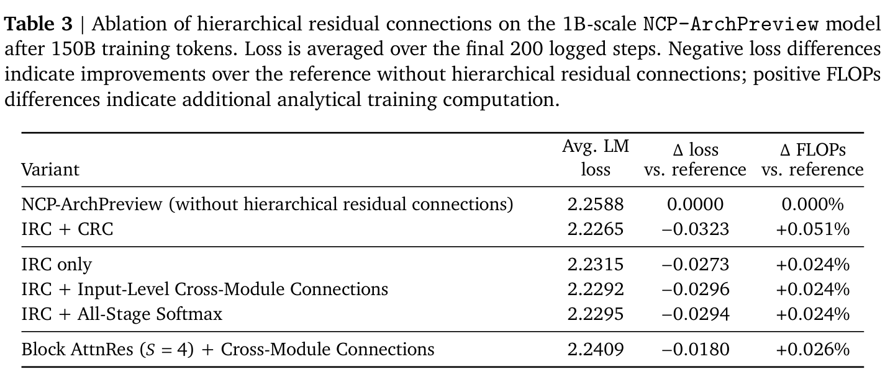
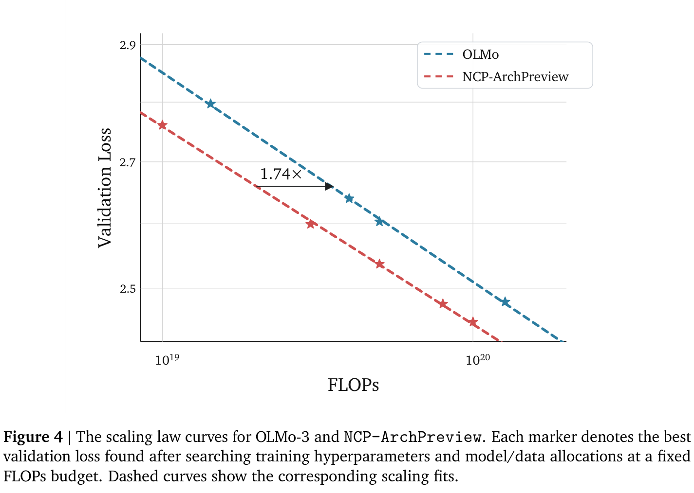
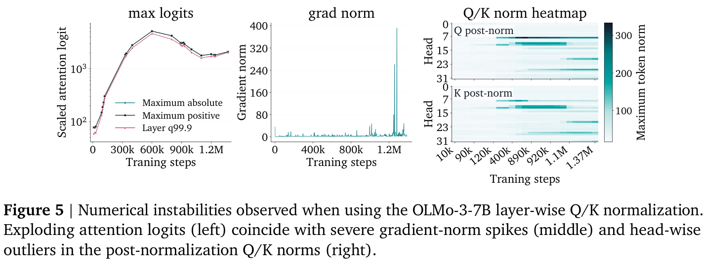
使用 OLMo-3 采用的逐层 Q/K 归一化训练 NCP-ArchPreview 时，我们观察到 attention logits 持续增大。这种增长伴随 Q/K 各头块矩阵范数的明显不平衡。少量 outlier 头可能主导 softmax 前的分数，导致 attention 分布高度集中。增大的 Q/K 状态还与不均匀的 gradient 流、异常的 Q/K gradient 范数，以及最终全局 gradient 范数的尖峰相关。
为确定这一行为的来源，我们比较配置对齐的 AdamW 与 Muon 基线，并评测将逐层 Q/K 归一化替换为逐头 Q/K 归一化的 Muon 变体。其他训练设置均保持不变。Muon 基线本身就能复现这种不稳定性。相比之下，NCP-ArchPreview 在稳定性方面表现更好。逐头 Q/K 归一化能够持续抑制 Q/K 范数 outlier 与 attention-logit 增长。
这些结果表明，不稳定性的主要来源是全矩阵 Muon 更新与逐层 Q/K 归一化之间的相互作用。全矩阵 Muon 耦合多个 attention 头的更新，而逐层归一化仅约束它们的整体尺度。它不会独立控制每个头的尺度或 QK 对齐，使少数头可以占据主导，并逐渐产生较大的点积。这一解释与先前观察一致：Muon 可能容易出现集中在一部分头中的 attention-logit 爆炸 [Team et al., 2026a]。
在本分析中，逐头 Q/K 归一化提供了更有效的稳定化方法。尽管如此，我们在所有主要实验中仍使用 OLMo-3-7B 采用的逐层 Q/K 归一化，以保持与原始基线的受控比较。逐头变体仅作为消融研究中的稳定化干预进行报告，并未用于获得主要性能结果。
离散概念词表为 NCP-ArchPreview 提供了 token 表示与概念级预测之间的紧凑接口。我们研究这一接口是否还能够……（接下页）
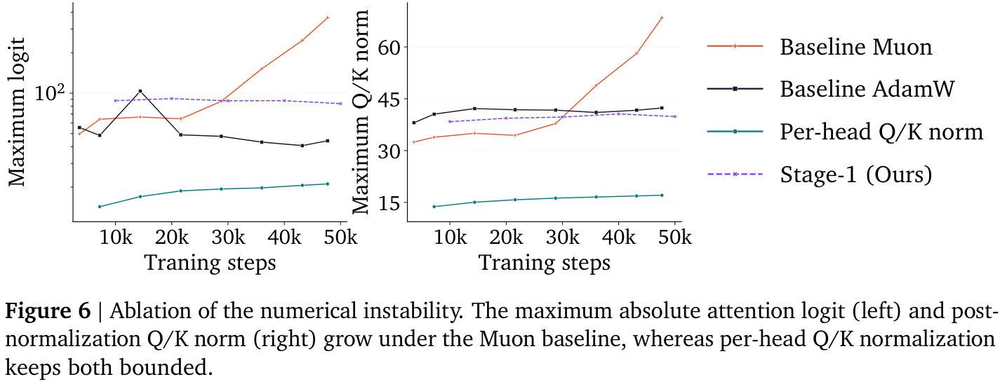
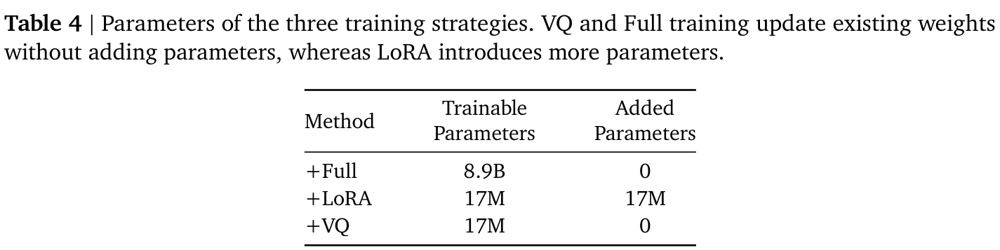
（接上页）支持轻量领域适配。所有适配实验均从 OLMo-3-7B 和 NCP-ArchPreview 对应的 Stage-1 checkpoint 开始。
对于 NCP-ArchPreview，+VQ 设置冻结 token 级主干，仅更新 VQ 码本和概念预测头，对应 17M 可训练参数。我们将其与全参数训练（+Full）和低秩适配（+LoRA）[Hu et al., 2021] 比较。为提供参数量匹配的比较，我们将 LoRA 配置为 17M 可训练参数。我们还使用相同领域数据与训练设置，对 OLMo-3-7B 应用 Full 和 LoRA 训练。表 4 汇总了参数成本。+VQ 与 +LoRA 设置分别更新 17M 参数，+Full 则更新整个模型。VQ 适配更新现有码本与预测头，因此不引入新参数；LoRA 则为模型新增 17M 参数。
代码：表 5 报告代码基准上的适配结果。对于 NCP-ArchPreview，VQ 训练将代码平均分从 30.04 提高到 32.69（+2.65），在适配后的各变体中最高，并且是唯一在全部四项代码任务上均有提升的设置。全参数训练改善了 HumanEval、HumanEval+ 和 MBPP，但其在 MBPP+ 上下降 22.49 分，使综合得分低于 Stage-1 基线。LoRA 在 MBPP+ 上也下降 7.67 分。相较配置对齐的 OLMo-3-7B 对照，NCP-ArchPreview 的 Full 和 LoRA 变体获得更高的代码平均分和通用平均分。适配后的这类退化，与领域适配和持续学习中记载的干扰现象一致：在新数据上优化可能降低先前已获得的能力 [Cheng et al., 2024, Kirkpatrick et al., 2017, Van de Ven et al., 2024]。虽然 VQ 训练保持 token 级主干不变，限制了对先前学得的代码能力的干扰，其通用平均分仍下降 0.42 分。
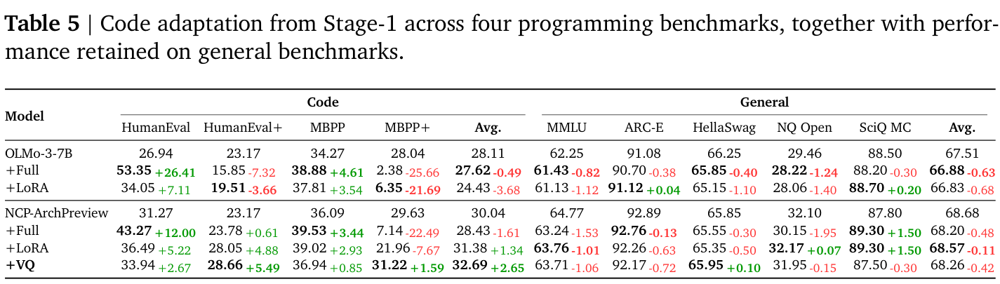
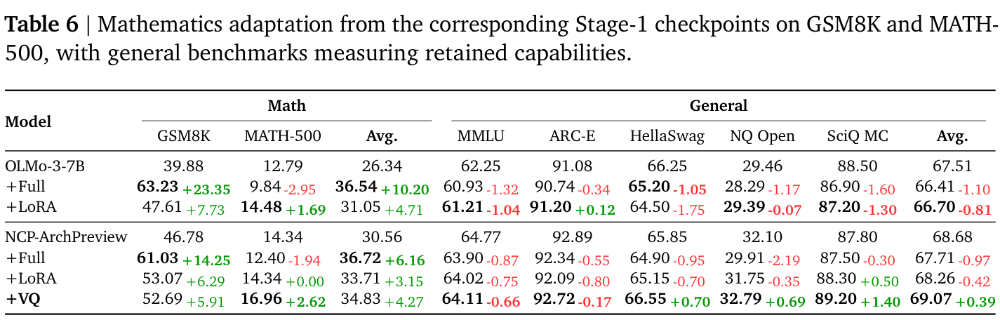
数学：如表 6 所示，VQ 训练将数学平均分从 30.56 提高到 34.83（+4.27）。这一收益超过 LoRA（+3.15），但仍低于全参数训练（+6.16）。遗忘表现则颠倒了这一排序：VQ 的通用平均分变化为 +0.39，LoRA 为 -0.42，全参数训练为 -0.97。因此，VQ 在报告的两种平均分上均超过 LoRA。相对于全参数训练，它牺牲 1.89 分的目标性能，换取高出 1.36 分的通用平均分。对齐比较同样有利于 NCP-ArchPreview：其 Full 和 LoRA 的数学平均分均高于对应 OLMo-3，同时保留了更高的通用平均分。
知识：对于知识适配，表 7 显示，NCP-ArchPreview 的 VQ 训练将 TriviaQA 精确匹配率从 40.28 提高到 49.47（+9.19），同时通用平均分基本不变（+0.03）。目标任务收益小于全参数训练（+18.00）和 LoRA（+17.48）。相较 OLMo-3，NCP-ArchPreview 在全参数训练（+18.00 对 +8.53）和 LoRA（+17.48 对 +8.06）下都获得更大的 TriviaQA 收益。OLMo-3-7B 的遗忘也更严重：通用平均分分别下降 1.04 和 1.80 分，其中 SciQ MC 的降幅尤其大，为 4.90 和 9.60 分。先前研究将 Transformer 前馈层描述为键值记忆，并识别出参与事实回忆、支持事实编辑的特定 FFN 神经元和中间层 MLP [Dai et al., 2022, Geva et al., 2021, Meng et al., 2022]。VQ 训练固定这些主干 MLP 参数，仅适配概念词表。因此，它无法直接改写编码在主干中的事实关联，这解释了它相较全参数训练和 LoRA 获得更小 TriviaQA 收益的原因。
训练吞吐量与内存使用：图 7 比较 VQ、LoRA 和全参数训练的训练吞吐量与 GPU 内存使用。在 8 张 GPU、micro-batch 大小为 1 时，VQ 达到 15,632 token/s/GPU，而 LoRA 为 10,400，全参数训练为 7,739，对应吞吐量分别提高 1.50× 和 2.02×。虽然 VQ 与 LoRA 都优化 17M 参数，VQ 的吞吐量高出 50%；全参数训练则更新全部 8.9B 参数。VQ 的内存占用也最低，使用可用内存的 32.4%，相比之下 LoRA 为 49.0%，全参数训练为 90.3%。在单张 GPU、micro-batch 大小为 2 时，VQ 使用……（接下页）
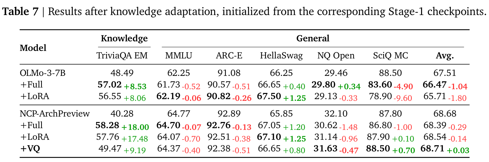
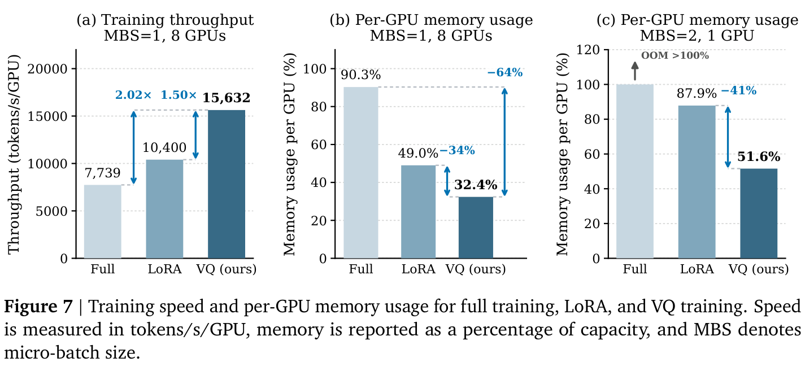
（接上页）51.6% 的内存，而 LoRA 达到 87.9%，全参数训练则超过内存容量。总体而言，VQ 既具有相对全参数训练的参数效率，也具有高于两个基线的吞吐量和低于它们的内存使用。
我们基于 OLMo-3-3B 构建 NCP-ArchPreview 及其基线。3B 规模 NCP-ArchPreview 将模型组织为 8 层 token 编码器、4 层概念模块和 7 层 token 解码器。为公平比较，我们进一步修改 OLMo-3-3B，将其 16 层 Transformer 层分为 8/1/7 层的组，并在对应深度放置相同的层级残差连接（第 2.5 节），将其记为 OLMo-3-3B + Residual。对于每种架构，我们训练一个增加一层 MTP 的变体。所有四个受控变体均在预训练语料的前 150B token 上训练。遵循 DeepSeek-V3 [DeepSeek-AI et al., 2025]，主模型保留下一 token 预测（NTP）目标，新增 MTP 层预测向前两个位置的 token，损失权重为 0.3。
图 8 展示排序如何随训练发展。带 MTP 的 OLMo-3-3B + Residual 初始损失低于 NCP-ArchPreview，但 NCP-ArchPreview 在约第 2.285k 次更新附近交叉到其下方。在最后 8k 次更新中，从最低到最高损失，曲线始终保持如下排序：带 MTP 的 NCP-ArchPreview、NCP-ArchPreview、带 MTP 的 OLMo-3-3B + Residual、OLMo-3-3B + Residual。随着训练推进，不带 MTP 的 NCP-ArchPreview 最终超过带……（接下页）
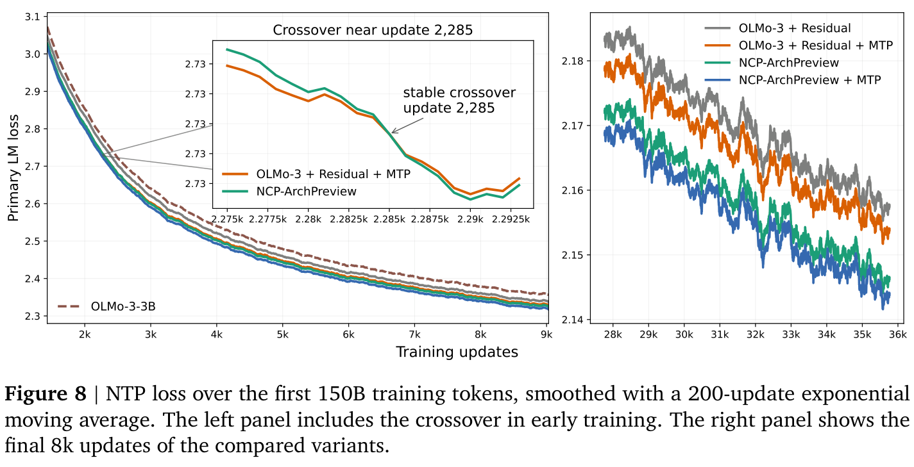
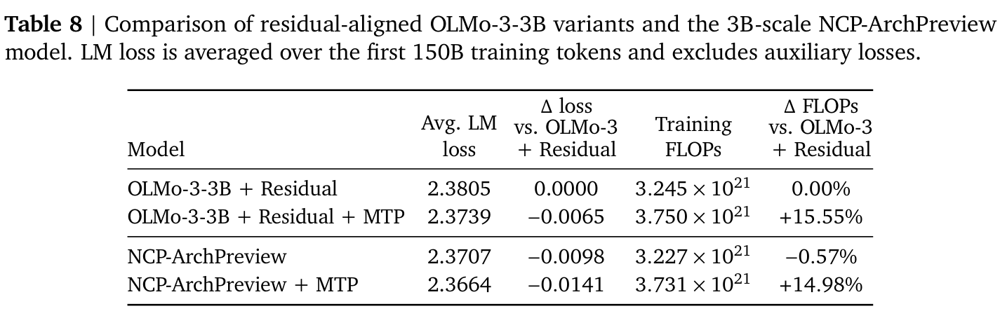
（接上页）MTP 的 OLMo-3-3B + Residual，而给 NCP-ArchPreview 添加 MTP 会带来进一步提升。
表 8 汇总前 150B token 的完整训练区间。NCP-ArchPreview 相对 OLMo-3-3B + Residual 改善 0.0098，大于为 OLMo-3-3B + Residual 增加 MTP 带来的 0.0065 改善。带 MTP 的 NCP-ArchPreview 比带 MTP 的 OLMo-3-3B + Residual 低 0.0075，同时使用略少的训练 FLOPs。
块扩散语言建模的近期进展证明了在每个块内并行生成多个 token 的可行性 [Arriola et al., 2025, Cheng et al., 2026a]。基于这一能力，块并行草稿模型已成为 speculative decoding 的有前景方向 [Chen et al., 2026, Cheng et al., 2026b, Inco AI, 2026]。这些模型通过一次前向传播提出整个 token 块，降低草稿生成延迟，但其效率仍受限于在多个未来位置维持连贯预测轨迹的困难。
第 5.2 节的结果表明，概念表示包含对多 token 预测有用的信息。因此，我们研究概念模块产生的状态是否能提高块并行草稿模型的接受长度。
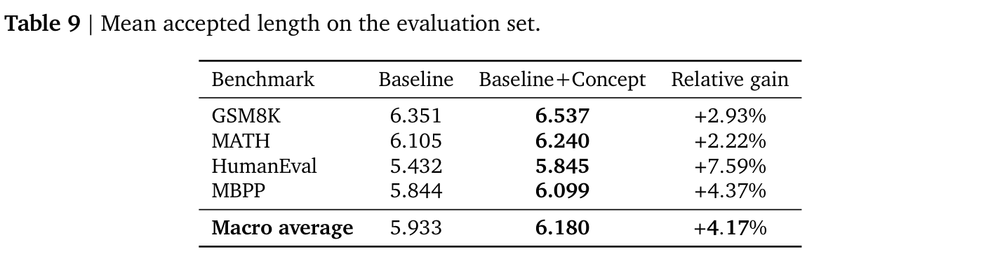
实验设计：我们的基线组合了 DFlash2 与 DFlare 中互补的架构改进。遵循 DFlash2 [Inco AI, 2026]，我们使用双抽头动态卷积来建模相邻草稿位置间的局部依赖，并使用轻量路径选择器，从每个位置的前 16 个候选中选择连贯序列。遵循 DFlare [Zhang et al., 2026]，草稿模型的每一层学习五个目标模型隐藏状态的自身加权组合，提供对不同语义深度目标表示的逐层访问。
我们的 Baseline+Concept 变体保持基线不变，并增加因果层级信号。对于结束于位置 \(t\) 的已验证前缀，我们使用最后一个完整目标分块的概念表示 \(c_{\lfloor t/k\rfloor}\)。在草稿模型第 \(\ell\) 层，概念表示以下述方式纳入每个提议位置：
门初始化为零，使草稿模型能够逐步纳入概念信号。这仅为 1.1B 参数的草稿模型增加 0.04M 参数，且不引入额外的目标模型计算。
实验设置：Baseline 与 Baseline+Concept 草稿模型使用相同的在线目标模型蒸馏流水线、数据顺序、随机种子和训练预算训练。两个模型都使用 8192 的序列长度、每个序列 512 个训练锚点、512 的全局 batch 大小，以及固定的 5B token 训练子集，重复训练 10 轮。我们在 GSM8K、MATH、HumanEval 和 MBPP 上评测草稿模型，采用精确的 speculative 验证，提议跨度为 16 个草稿 token。
遵循 DSpark，我们报告平均接受长度（MAL），其定义为：
其中，\(c_r\) 是验证轮次 \(r\) 中确认写入的 token 数量，包括存在时由目标模型给出的修正 token 或额外 token。
结果：如表 9 所示，概念条件化在全部四项基准上均持续提高 MAL。宏平均 MAL 从 5.933 提高到 6.180，对应 4.17% 的相对提升。HumanEval 的收益最大，MAL 提高 7.59%。这些结果表明，分块级概念表示以更广泛的预测上下文补充 token 级目标模型特征，以可忽略的参数开销，提高了块并行提议的一致性。
越来越多的研究预测表示，而非重建细粒度输入。联合 embedding 预测架构通过预测潜在目标学习表示，这些目标保留语义结构，同时舍弃难以预测且对学得表示并非必要的输入细节 [Assran et al., 2023]。Large Concept Models 将完整句子映射到共享连续 embedding 空间，从而将抽象层级的自回归建模应用于语言 [Barrault et al., 2024]。这些方法推动采用高于原始输入单元层次的目标，但使用通常由独立编码器定义的连续预测空间。概念级语言建模则在语言模型内部学习更高层级的预测空间，同时保留 token 级生成。
层级语言模型在细粒度单元组上引入更短的高层序列。Hourglass Transformer 压缩 token 序列，随后进行上采样 [Nawrot et al., 2022]；MegaByte 在固定字节块上进行全局建模，并在每个块内部进行局部建模 [Yu et al., 2023]。BLT 和 H-Net 用依赖数据的字节块替代固定 token 化 [Hwang et al., 2026, Pagnoni et al., 2025]。在 token 层面，ContextLM 学习预测性上下文 embedding，DLCM 则通过动态分块构建更高层级单元 [Dai et al., 2025, Qu et al., 2025]。这些方法主要改变计算粒度或用于构建潜在单元的机制。
另一些工作改变预测目标，或在生成过程中引入潜在状态。多 token 预测保留 token 级目标，同时为多个未来 token 添加辅助头 [Gloeckle et al., 2024]。基于潜在推理或连续概念的方法则交替使用或预测连续隐藏状态 [Hao et al., 2024, Su et al., 2025]。ConceptLM 是我们工作的直接基础：它引入 NCP 作为离散概念级目标，与语言模型联合学习经过乘积量化的概念词表，并以预测概念为条件进行 token 生成 [Liu et al., 2026]。ConceptLM 评测了从零开始训练、最高达到 1.5B 参数的模型，并通过持续预训练将 NCP 加到现有 8B 模型上。NCP-ArchPreview 则研究一个源自 Olmo-3-7B 架构的 8.9B 模型，在数万亿 token 的预训练开始时，以及后续训练阶段中，NCP 始终启用。
标准残差连接将跨层信息累积到单一相加流中，这推动了选择性复用早期表示的机制。DenseFormer 使用与输入无关的可学习权重，对不同深度的先前块输出进行平均 [Pagliardini et al., 2024]。DeepCrossAttention 使用依赖输入的权重组合层输出，并额外引入沿深度的 cross-attention [Heddes et al., 2025]。与此同时，MUDDFormer 为 query、key、value 和残差流分别预测以 token 为条件的稠密连接权重 [Xiao et al., 2025]。Attention Residuals 则在先前层输出上施加 softmax attention，并提供支持可扩展训练的分块变体 [Team et al., 2026b]。Depth-Attention 通过现有 QKV 路径混合早期 value 状态，将跨层选择放入 self-attention 内部 [Zeng et al., 2026]。NCP-ArchPreview 将 MUDDFormer 的单流 DD 形式用作模块内残差连接（IRC），支持每个模块内部复用完整历史。跨模块残差连接（CRC）进一步支持在编码器、概念模块和解码器之间进行以目标状态为条件的深度选择。
扩展到长上下文训练：本报告关注在标准上下文长度下经过 5.73T token 预训练和 100B token 中期训练后的 NCP-ArchPreview。当前架构预览不包含长上下文训练，它仍是我们计划中的完整训练配方的一部分。由于概念级路径在压缩序列上运行，更长的上下文可能为潜在空间建模提供尤其有利的设置。将 NCP-ArchPreview 扩展到这一场景，将使我们能够研究概念预测和层级残差路由如何扩展到长得多的依赖关系。
语言建模损失与下游性能的关系：NCP-ArchPreview 在预训练和中期训练的全过程中，相较 OLMo-3-7B 均保持明显的 token 级语言建模损失优势，且两个 checkpoint 的综合下游收益均为正。预训练后的下游提升更明显，总体平均分提高 2.45 分；中期训练后的提升为 0.59 分，且因基准而异。近期研究也观察到交叉熵损失与下游能力之间类似的阶段与任务依赖关系 [Patel et al., 2026, Yano et al., 2026]。
这些结果确立了 NCP-ArchPreview 一贯的优化优势，同时表明，更低语言建模损失向下游性能的转化，取决于训练分布和评测领域。未来工作将探索更多中期训练配方、能够感知能力差异的数据选择，以及结合语言建模损失、下游评测和代理评测的 checkpoint 选择准则。
本工作确立了语言模型学得的潜在表示可以在万亿 token 规模下充当主要预测目标。NCP-ArchPreview 将这一想法实现为一个 8.9B 参数架构，联合建模 token 和学得的离散概念，同时保留标准自回归生成。在 5.73T token 上预训练后，它仅使用 OLMo-3-7B 训练 token 的 51.3%，就达到其最终损失，并将下游宏平均分提高 2.45 分，其中 GSM8K 提高 5.99 分。受控实验显示潜在架构、层级路由与 NCP 带来互补收益；完整模型仅使用参数量对齐的 40 层 Transformer 计算量的 85%，就接近其表现，而 scaling-law 实验显示计算效率提高 1.74×。学得的概念空间还支持通过仅 17M VQ 参数进行高效领域适配，并以可忽略的开销，将基于 DFlash2 的 speculative 草稿模型的平均接受长度提高 4.17%。这些结果共同提供了迄今最大规模的潜在空间语言建模验证，使联合 token 与概念预测成为构建能力更强、效率更高的语言模型的实用、可扩展蓝图。通过长上下文训练扩展这一架构，并将其优化优势更稳定地转化为下游能力，仍是未来工作的重要方向。
Marianne Arriola, Aaron Gokaslan, Justin T. Chiu, Zhihan Yang, Zhixuan Qi, Jiaqi Han, Subham Sekhar Sahoo, and Volodymyr Kuleshov. 块扩散：在自回归与扩散语言模型之间插值, 2025. URL https://arxiv.org/abs/2503.09573.
Mahmoud Assran, Quentin Duval, Ishan Misra, Piotr Bojanowski, Pascal Vincent, Michael Rabbat, Yann LeCun, and Nicolas Ballas. 使用联合 embedding……（接下页）
（接上页）预测架构从图像进行自监督学习. 收录于 2023 IEEE/CVF 计算机视觉与模式识别会议（CVPR）, 页 15619–15629. IEEE, 2023.
Mahmoud Assran, Adrien Bardes, David Fan, Quentin Garrido, Russell Howes, Mojtaba Komeili, Matthew Muckley, Ammar Rizvi, Claire Roberts, Koustuv Sinha, Artem Zholus, 等. V-JEPA 2：自监督视频模型支持理解、预测与规划. arXiv 预印本 arXiv:2506.09985, 2025.
Jacob Austin, Augustus Odena, Maxwell Nye, Maarten Bosma, Henryk Michalewski, David Dohan, Ellen Jiang, Carrie Cai, Michael Terry, Quoc Le, and Charles Sutton. 使用大型语言模型进行程序合成. arXiv 预印本 arXiv:2108.07732, 2021. 链接 https://arxiv.org/abs/2108.07732.
Adrien Bardes, Quentin Garrido, Jean Ponce, Xinlei Chen, Michael Rabbat, Yann LeCun, Mahmoud Assran, and Nicolas Ballas. 重新审视用于从视频学习视觉表示的特征预测. 机器学习研究汇刊, 2024.
Loïc Barrault, Paul-Ambroise Duquenne, Maha Elbayad, Artyom Kozhevnikov, Belen Alastruey, Pierre Andrews, Mariano Coria, Guillaume Couairon, Marta R Costa-jussà, David Dale, 等. Large Concept Models：句子表示空间中的语言建模. arXiv 预印本 arXiv:2412.08821, 2024.
Yonatan Bisk, Rowan Zellers, Ronan Le Bras, Jianfeng Gao, and Yejin Choi. PIQA：以自然语言进行物理常识推理. AAAI 人工智能会议论文集, 34(05):7432–7439, 2020. DOI： 10.1609/aaai.v34i05.6239. 链接 https://ojs.aaai.org/index.php/AAAI/article/view/6239.
Andreas Blattmann, Robin Rombach, Huan Ling, Tim Dockhorn, Seung Wook Kim, Sanja Fidler, and Karsten Kreis. 对齐你的潜在表示：使用潜在扩散模型进行高分辨率视频合成. 收录于 IEEE/CVF 计算机视觉与模式识别会议论文集, 页 22563–22575, 2023.
Federico Cassano, John Gouwar, Daniel Nguyen, Sydney Nguyen, Luna Phipps-Costin, Donald Pinckney, Ming-Ho Yee, Yangtian Zi, Carolyn Jane Anderson, Molly Q. Feldman, Arjun Guha, Michael Greenberg, and Abhinav Jangda. MultiPL-E：一种可扩展规模、可扩充的神经代码生成基准评测方法. arXiv 预印本 arXiv:2208.08227, 2022. 链接 https://arxiv.org/abs/2208.08227.
Jian Chen, Yesheng Liang, and Zhijian Liu. DFlash：用于快速 speculative decoding 的块扩散, 2026. 链接 https://arxiv.org/abs/2602.06036.
Mark Chen, Jerry Tworek, Heewoo Jun, Qiming Yuan, Henrique Ponde de Oliveira Pinto, Jared Kaplan, Harri Edwards, Yuri Burda, Nicholas Joseph, Greg Brockman, Alex Ray, Raul Puri, Gretchen Krueger, Michael Petrov, Heidy Khlaaf, Girish Sastry, Pamela Mishkin, Brooke Chan, Scott Gray, Nick Ryder, Mikhail Pavlov, Alethea Power, Lukasz Kaiser, Mohammad Bavarian, Clemens Winter, Philippe Tillet, Felipe Petroski Such, Dave Cummings, Matthias Plappert, Fotios Chantzis, Elizabeth Barnes, Ariel Herbert-Voss, William Hebgen Guss, Alex Nichol, Alex Paino, Nikolas Tezak, Jie Tang, Igor Babuschkin, Suchir Balaji, Shantanu Jain, William Saunders, Christopher Hesse, Andrew N. Carr, Jan Leike, Josh Achiam, Vedant Misra, Evan Morikawa, Alec Radford, Matthew Knight, Miles Brundage, Mira Murati, Katie Mayer, Peter Welinder, Bob McGrew, Dario Amodei, Sam McCandlish, Ilya Sutskever, and Wojciech Zaremba. 评测在代码上训练的大型语言模型. arXiv 预印本 arXiv:2107.03374, 2021. 链接 https://arxiv.org/abs/2107.03374.
Daixuan Cheng, Shaohan Huang, and Furu Wei. 通过阅读理解适配大型语言模型. 收录于 国际学习表示会议, 卷 2024, 页 48624–48652, 2024.
Shuang Cheng, Yihan Bian, Dawei Liu, Yuhua Jiang, Yihao Liu, Linfeng Zhang, Qian Yao, Zhongbo Tian, Wenhai Wang, Qipeng Guo, Kai Chen, Biqing Qi, and Bowen Zhou. SDAR：用于可扩展序列生成的协同扩散–自回归范式. 收录于 计算语言学协会研究发现：ACL 2026, 页 22058–22075, 美国加利福尼亚州圣迭戈, 2026 年 7 月 a. 计算语言学协会. DOI： 10.18653/v1/2026.findings-acl.1110. 链接 https://aclanthology.org/2026.findings-acl.1110/.
Xin Cheng, Xingkai Yu, Chenze Shao, Jiashi Li, Yunfan Xiong, Yi Qian, Jiaqi Zhu, Shirong Ma, Xiaokang Zhang, Jiasheng Ye, Qinyu Chen, Chengqi Deng, Jiping Yu, Damai Dai, Zhengyan Zhang, Yixuan Wei, Yixuan Tan, Wenkai Yang, Runxin Xu, Yu Wu, Zhean Xu, Xuanyu Wang, Muyang Chen, Rui Tian, Xiao Bi, Zhewen Hao, Shaoyuan Chen, Huanqi Cao, Wentao Zhang, Anyi Xu, Huishuai Zhang, Dongyan Zhao, and Wenfeng Liang. DSpark：结合半自回归生成、由置信度调度的 speculative decoding, 2026b. 链接 https://arxiv.org/abs/2607.05147.
Peter Clark, Isaac Cowhey, Oren Etzioni, Tushar Khot, Ashish Sabharwal, Carissa Schoenick, and Oyvind Tafjord. 认为你已解决问答问题？试试 ARC——AI2 推理挑战. arXiv 预印本 arXiv:1803.05457, 2018. 链接 https://arxiv.org/abs/1803.05457.
Karl Cobbe, Vineet Kosaraju, Mohammad Bavarian, Mark Chen, Heewoo Jun, Lukasz Kaiser, Matthias Plappert, Jerry Tworek, Jacob Hilton, Reiichiro Nakano, Christopher Hesse, and John Schulman. 训练验证器以解决数学应用题. arXiv 预印本 arXiv:2110.14168, 2021. 链接 https://arxiv.org/abs/2110.14168.
Beiya Dai, Yuliang Liu, Daozheng Xue, Yunchong Song, Qipeng Guo, Kai Chen, Xinbing Wang, Bowen Zhou, and Zhouhan Lin. 通过学习预测性上下文 embeddings 进行上下文级语言建模. arXiv 预印本 arXiv:2510.20280, 2025.
Damai Dai, Li Dong, Yaru Hao, Zhifang Sui, Baobao Chang, and Furu Wei. 预训练 transformer 中的知识神经元. 收录于 计算语言学协会第 60 届年会论文集（第 1 卷：长论文）, 页 8493–8502, 2022.
DeepSeek-AI. Deepseek LLM：以长期主义扩展开源语言模型, 2024. 链接
https://arxiv.org/abs/2401.02954.
DeepSeek-AI, Aixin Liu, Bei Feng, Bing Xue, Bingxuan Wang, Bochao Wu, Chengda Lu, Chenggang Zhao, Chengqi Deng, Chenyu Zhang, Chong Ruan, Damai Dai, Daya Guo, Dejian Yang, Deli Chen, Dongjie Ji, Erhang Li, Fangyun Lin, Fucong Dai, Fuli Luo, Guangbo Hao, Guanting Chen, Guowei Li, H. Zhang, Han Bao, Hanwei Xu, Haocheng Wang, Haowei Zhang, Honghui Ding, Huajian Xin, Huazuo Gao, Hui Li, Hui Qu, J. L. Cai, Jian Liang, Jianzhong Guo, Jiaqi Ni, Jiashi Li, Jiawei Wang, Jin Chen, Jingchang Chen, Jingyang Yuan, Junjie Qiu, Junlong Li, Junxiao Song, Kai Dong, Kai Hu, Kaige Gao, Kang Guan, Kexin Huang, Kuai Yu, Lean Wang, Lecong Zhang, Lei Xu, Leyi Xia, Liang Zhao, Litong Wang, Liyue Zhang, Meng Li, Miaojun Wang, Mingchuan Zhang, Minghua Zhang, Minghui Tang, Mingming Li, Ning Tian, Panpan Huang, Peiyi Wang, Peng Zhang, Qiancheng Wang, Qihao Zhu, Qinyu Chen, Qiushi Du, R. J. Chen, R. L. Jin, Ruiqi Ge, Ruisong Zhang, Ruizhe Pan, Runji Wang, Runxin Xu, Ruoyu Zhang, Ruyi Chen, S. S. Li, Shanghao Lu, Shangyan Zhou, Shanhuang Chen, Shaoqing Wu, Shengfeng Ye, Shengfeng Ye, Shirong Ma, Shiyu Wang, Shuang Zhou, Shuiping Yu, Shunfeng Zhou, Shuting Pan, T. Wang, Tao Yun, Tian Pei, Tianyu Sun, W. L. Xiao, Wangding Zeng, Wanjia Zhao, Wei An, Wen Liu, Wenfeng Liang, Wenjun Gao, Wenqin Yu,
（接上页）Wentao Zhang, X. Q. Li, Xiangyue Jin, Xianzu Wang, Xiao Bi, Xiaodong Liu, Xiaohan Wang, Xiaojin Shen, Xiaokang Chen, Xiaokang Zhang, Xiaosha Chen, Xiaotao Nie, Xiaowen Sun, Xiaoxiang Wang, Xin Cheng, Xin Liu, Xin Xie, Xingchao Liu, Xingkai Yu, Xinnan Song, Xinxia Shan, Xinyi Zhou, Xinyu Yang, Xinyuan Li, Xuecheng Su, Xuheng Lin, Y. K. Li, Y. Q. Wang, Y. X. Wei, Y. X. Zhu, Yang Zhang, Yanhong Xu, Yanhong Xu, Yanping Huang, Yao Li, Yao Zhao, Yaofeng Sun, Yaohui Li, Yaohui Wang, Yi Yu, Yi Zheng, Yichao Zhang, Yifan Shi, Yiliang Xiong, Ying He, Ying Tang, Yishi Piao, Yisong Wang, Yixuan Tan, Yiyang Ma, Yiyuan Liu, Yongqiang Guo, Yu Wu, Yuan Ou, Yuchen Zhu, Yuduan Wang, Yue Gong, Yuheng Zou, Yujia He, Yukun Zha, Yunfan Xiong, Yunxian Ma, Yuting Yan, Yuxiang Luo, Yuxiang You, Yuxuan Liu, Yuyang Zhou, Z. F. Wu, Z. Z. Ren, Zehui Ren, Zhangli Sha, Zhe Fu, Zhean Xu, Zhen Huang, Zhen Zhang, Zhenda Xie, Zhengyan Zhang, Zhewen Hao, Zhibin Gou, Zhicheng Ma, Zhigang Yan, Zhihong Shao, Zhipeng Xu, Zhiyu Wu, Zhongyu Zhang, Zhuoshu Li, Zihui Gu, Zijia Zhu, Zijun Liu, Zilin Li, Ziwei Xie, Ziyang Song, Ziyi Gao, and Zizheng Pan. Deepseek-V3 技术报告, 2025. 链接 https://arxiv.org/abs/2412.19437.
Dheeru Dua, Yizhong Wang, Pradeep Dasigi, Gabriel Stanovsky, Sameer Singh, and Matt Gardner. DROP：要求对段落进行离散推理的阅读理解基准. 收录于 计算语言学协会北美分会 2019 年会议论文集：人类语言技术，第 1 卷（长论文与短论文）, 页 2368–2378. 计算语言学协会, 2019. DOI： 10.18653/v1/N19-1246. 链接 https://aclanthology.org/N19-1246/.
Mor Geva, Roei Schuster, Jonathan Berant, and Omer Levy. Transformer 前馈层是键值记忆. 收录于 2021 年自然语言处理实证方法会议论文集, 页 5484–5495, 2021.
Fabian Gloeckle, Badr Youbi Idrissi, Baptiste Rozière, David Lopez-Paz, and Gabriel Synnaeve. 通过多 token 预测获得更好、更快的大型语言模型. arXiv 预印本 arXiv:2404.19737, 2024.
Robert Gray. 向量量化. IEEE ASSP 杂志, 1(2):4–29, 1984.
Wes Gurnee and Max Tegmark. 语言模型表示空间与时间. 收录于 第 12 届国际学习表示会议, 2024.
Shibo Hao, Sainbayar Sukhbaatar, DiJia Su, Xian Li, Zhiting Hu, Jason Weston, and Yuandong Tian. 训练大型语言模型在连续潜在空间中推理. arXiv 预印本 arXiv:2412.06769, 2024.
Mike Heddes, Adel Javanmard, Kyriakos Axiotis, Gang Fu, MohammadHossein Bateni, and Vahab Mirrokni. Deepcrossattention：增强 transformer 残差连接. arXiv 预印本 arXiv:2502.06785, 2025.
Dan Hendrycks, Collin Burns, Steven Basart, Andy Zou, Mantas Mazeika, Dawn Song, and Jacob Steinhardt. 衡量大规模多任务语言理解. 收录于 国际学习表示会议, 2021a. 链接 https://arxiv.org/abs/2009.03300.
Dan Hendrycks, Collin Burns, Saurav Kadavath, Akul Arora, Steven Basart, Eric Tang, Dawn Song, and Jacob Steinhardt. 使用 MATH 数据集衡量数学问题求解能力. 收录于 第 35 届神经信息处理系统会议数据集与基准赛道（第 2 轮）, 2021b. 链接 https://openreview.net/forum?id=7Bywt2mQsCe.
Edward J Hu, Yelong Shen, Phillip Wallis, Zeyuan Allen-Zhu, Yuanzhi Li, Shean Wang, Lu Wang, and Weizhu Chen. LoRA：大型语言模型的低秩适配. arXiv 预印本 arXiv:2106.09685, 2021.
Sukjun Hwang, Brandon Wang, and Albert Gu. 用于端到端层级序列建模的动态分块. 收录于 国际学习表示会议, 卷 2026, 页 149273–149313, 2026.
Inco AI. DFlash 2：保持并行草稿生成. https://inco.ai/blog/dflash2/, 2026 年 8 月. 技术博客.
Herve Jegou, Matthijs Douze, and Cordelia Schmid. 用于最近邻搜索的乘积量化. IEEE 模式分析与机器智能汇刊, 33(1):117–128, 2010.
Di Jin, Eileen Pan, Nassim Oufattole, Wei-Hung Weng, Hanyi Fang, and Peter Szolovits. 这位患者患有什么疾病？源自医学考试的大规模开放域问答数据集. 应用科学, 11(14):6421, 2021. DOI： 10.3390/app11146421. 链接 https://www.mdpi.com/2076-3417/11/14/6421.
Keller Jordan, Yuchen Jin, Vlado Boza, You Jiacheng, Franz Cesista, Laker Newhouse, and Jeremy Bernstein. Muon：神经网络隐藏层优化器, 2024. 链接 https://kellerjordan.github.io/posts/muon/.
Mandar Joshi, Eunsol Choi, Daniel S Weld, and Luke Zettlemoyer. TriviaQA：用于阅读理解的大规模远程监督挑战数据集. 收录于 计算语言学协会第 55 届年会论文集（第 1 卷：长论文）, 页 1601–1611, 2017.
James Kirkpatrick, Razvan Pascanu, Neil Rabinowitz, Joel Veness, Guillaume Desjardins, Andrei A Rusu, Kieran Milan, John Quan, Tiago Ramalho, Agnieszka Grabska-Barwinska, 等. 克服神经网络中的灾难性遗忘. 美国国家科学院院刊, 114(13): 3521–3526, 2017.
Tom Kwiatkowski, Jennimaria Palomaki, Olivia Redfield, Michael Collins, Ankur Parikh, Chris Alberti, Danielle Epstein, Illia Polosukhin, Jacob Devlin, Kenton Lee, Kristina Toutanova, Llion Jones, Matthew Kelcey, Ming-Wei Chang, Andrew M. Dai, Jakob Uszkoreit, Quoc Le, and Slav Petrov. Natural Questions：问答研究基准. 计算语言学协会汇刊, 7:452–466, 2019. DOI： 10.1162/tacl_a_00276. 链接 https://aclanthology.org/Q19-1026/.
Yuhang Lai, Chengxi Li, Yiming Wang, Tianyi Zhang, Ruiqi Zhong, Luke Zettlemoyer, Wen-Tau Yih, Daniel Fried, Sida Wang, and Tao Yu. DS-1000：用于数据科学代码生成的自然、可靠基准. 收录于 第 40 届国际机器学习会议论文集, 卷 202，机器学习研究论文集, 页 18319–18345. PMLR, 2023. 链接 https://proceedings.mlr.press/v202/lai23b.html.
Yann LeCun 等. 迈向自主机器智能的路径，版本 0.9. 2, 2022-06-27. Open Review, 62(1):1–62, 2022.
Aitor Lewkowycz, Anders Andreassen, David Dohan, Ethan Dyer, Henryk Michalewski, Vinay Ramasesh, Ambrose Slone, Cem Anil, Imanol Schlag, Theo Gutman-Solo, Yuhuai Wu, Behnam Neyshabur, Guy Gur-Ari, and Vedant Misra. 使用语言模型解决定量推理问题. arXiv 预印本 arXiv:2206.14858, 2022. 链接 https://arxiv.org/abs/2206.14858.
Kenneth Li, Aspen K. Hopkins, David Bau, Fernanda Viégas, Hanspeter Pfister, and Martin Wattenberg. 涌现的世界表示：探索在合成任务上训练的序列模型. 收录于 国际学习表示会议, 2023.
Hunter Lightman, Vineet Kosaraju, Yura Burda, Harri Edwards, Bowen Baker, Teddy Lee, Jan Leike, John Schulman, Ilya Sutskever, and Karl Cobbe. 让我们逐步验证. arXiv 预印本 arXiv:2305.20050, 2023. 链接 https://arxiv.org/abs/2305.20050.
Jiawei Liu, Chunqiu Steven Xia, Yuyao Wang, and Lingming Zhang. 你的 chatGPT 生成代码真的正确吗？对大型语言模型代码生成进行严格评测. 收录于 神经信息处理系统进展, 卷 36, 2023. DOI： 10.52202/075280-0943. 链接 https://proceedings.neurips.cc/paper_files/paper/2023/hash/43e9d647ccd3e4b7b5baab53f0368686-Abstract.html.
Jingyuan Liu, Jianlin Su, Xingcheng Yao, Zhejun Jiang, Guokun Lai, Yulun Du, Yidao Qin, Weixin Xu, Enzhe Lu, Junjie Yan, Yanru Chen, Huabin Zheng, Yibo Liu, Shaowei Liu, Bohong Yin, Weiran He, Han Zhu, Yuzhi Wang, Jianzhou Wang, Mengnan Dong, Zheng Zhang, Yongsheng Kang, Hao Zhang, Xinran Xu, Yutao Zhang, Yuxin Wu, Xinyu Zhou, and Zhilin Yang. Muon 可扩展到 LLM 训练, 2025. 链接 https://arxiv.org/abs/2502.16982.
Yuliang Liu, Yunchong Song, Yixuan Wang, Kewen Ge, Alex Lamb, Qipeng Guo, Kai Chen, Bowen Zhou, and Zhouhan Lin. 离散潜在空间中的下一概念预测带来更强的语言模型. arXiv 预印本 arXiv:2602.08984, 2026.
Kevin Meng, Arnab Sen Sharma, Alex Andonian, Yonatan Belinkov, and David Bau. 大规模编辑 transformer 中的记忆. arXiv 预印本 arXiv:2210.07229, 2022.
Seyed Iman Mirzadeh, Keivan Alizadeh, Hooman Shahrokhi, Oncel Tuzel, Samy Bengio, and Mehrdad Farajtabar. GSM-Symbolic：理解大型语言模型数学推理的局限性. 收录于 国际学习表示会议, 2025. 链接 https://openreview.net/forum?id=AjXkRZIvjB.
Arindam Mitra, Hamed Khanpour, Corby Rosset, and Ahmed Awadallah. Orca-Math：释放 SLM 在小学数学中的潜力. arXiv 预印本 arXiv:2402.14830, 2024.
Piotr Nawrot, Szymon Tworkowski, Michał Tyrolski, Łukasz Kaiser, Yuhuai Wu, Christian Szegedy, and Henryk Michalewski. 层级 transformer 是更高效的语言模型. 收录于 计算语言学协会研究发现：NAACL 2022, 页 1559–1571, 2022.
Team Olmo, :, Allyson Ettinger, Amanda Bertsch, Bailey Kuehl, David Graham, David Heineman, Dirk Groeneveld, Faeze Brahman, Finbarr Timbers, Hamish Ivison, Jacob Morrison, Jake Poznanski, Kyle Lo, Luca Soldaini, Matt Jordan, Mayee Chen, Michael Noukhovitch, Nathan Lambert, Pete Walsh, Pradeep Dasigi, Robert Berry, Saumya Malik, Saurabh Shah, Scott Geng, Shane Arora, Shashank Gupta, Taira Anderson, Teng Xiao, Tyler Murray, Tyler Romero, Victoria Graf, Akari Asai, Akshita Bhagia, Alexander Wettig, Alisa Liu, Aman Rangapur, Chloe Anastasiades, Costa Huang, Dustin Schwenk, Harsh Trivedi, Ian Magnusson, Jaron Lochner, Jiacheng Liu, Lester James V. Miranda, Maarten Sap, Malia Morgan, Michael Schmitz, Michal Guerquin, Michael Wilson, Regan Huff, Ronan Le Bras, Rui Xin, Rulin Shao, Sam Skjonsberg, Shannon Zejiang Shen, Shuyue Stella Li, Tucker Wilde, Valentina Pyatkin, Will Merrill, Yapei Chang, Yuling Gu, Zhiyuan Zeng, Ashish Sabharwal, Luke Zettlemoyer, Pang Wei Koh, Ali Farhadi, Noah A. Smith, and Hannaneh Hajishirzi. Olmo 3, 2026. 链接 https://arxiv.org/abs/2512.13961.
Matteo Pagliardini, Amirkeivan Mohtashami, Francois Fleuret, and Martin Jaggi. DenseFormer：通过按深度加权平均增强 transformer 中的信息流. 神经信息处理系统进展, 37:136479–136508, 2024.
Artidoro Pagnoni, Ramakanth Pasunuru, Pedro Rodriguez, John Nguyen, Benjamin Muller, Margaret Li, Chunting Zhou, Lili Yu, Jason E Weston, Luke Zettlemoyer, 等. Byte Latent Transformer：patch 比 token 更具可扩展性. 收录于 计算语言学协会第 63 届年会论文集（第 1 卷：长论文）, 页 9238–9258, 2025.
Ankit Pal, Logesh Kumar Umapathi, and Malaikannan Sankarasubbu. MedMCQA：用于医学领域问答的大规模多学科多选题数据集. 收录于 健康、推理与学习会议论文集, 卷 174，机器学习研究论文集, 页 248–260. PMLR, 2022. 链接 https://proceedings.mlr.press/v174/pal22a.html.
Denis Paperno, Germán Kruszewski, Angeliki Lazaridou, Ngoc Quan Pham, Raffaella Bernardi, Sandro Pezzelle, Marco Baroni, Gemma Boleda, and Raquel Fernández. LAMBADA 数据集：需要广泛篇章上下文的词预测. 收录于 计算语言学协会第 54 届年会论文集（第 1 卷：长论文）, 页 1525–1534. 计算语言学协会, 2016. DOI： 10.18653/v1/P16-1144. 链接 https://aclanthology.org/P16-1144/.
Kiho Park, Yo Joong Choe, and Victor Veitch. 线性表示假说与大型语言模型的几何结构. 收录于 第 41 届国际机器学习会议论文集, 卷 235，机器学习研究论文集, 页 39643–39666. PMLR, 2024.
Arkil Patel, Siva Reddy, Marius Mosbach, and Dzmitry Bahdanau. 使用代理指标预测 LLM 的下游性能, 2026. 链接 https://arxiv.org/abs/2605.18607.
Xingwei Qu, Shaowen Wang, Zihao Huang, Kai Hua, Fan Yin, Rui-Jie Zhu, Jundong Zhou, Qiyang Min, Zihao Wang, Yizhi Li, 等. Dynamic Large Concept Models：自适应语义空间中的潜在推理. arXiv 预印本 arXiv:2512.24617, 2025.
Pranav Rajpurkar, Jian Zhang, Konstantin Lopyrev, and Percy Liang. SQuAD：用于机器文本理解的 100,000 多个问题. 收录于 2016 年自然语言处理实证方法会议论文集, 页 2383–2392. 计算语言学协会, 2016. DOI： 10.18653/v1/D16-1264. 链接 https://aclanthology.org/D16-1264/.
Siva Reddy, Danqi Chen, and Christopher D. Manning. CoQA：对话问答挑战. 计算语言学协会汇刊, 7:249–266, 2019. DOI： 10.1162/tacl_a_00266. 链接 https://aclanthology.org/Q19-1016/.
Robin Rombach, Andreas Blattmann, Dominik Lorenz, Patrick Esser, and Björn Ommer. 使用潜在扩散模型进行高分辨率图像合成. 收录于 IEEE/CVF 计算机视觉与模式识别会议论文集, 页 10684–10695, 2022.
Keisuke Sakaguchi, Ronan Le Bras, Chandra Bhagavatula, and Yejin Choi. WinoGrande：大规模对抗式 Winograd Schema 挑战. AAAI 人工智能会议论文集, 34 (05):8732–8740, 2020. DOI： 10.1609/aaai.v34i05.6399. 链接 https://ojs.aaai.org/index.php/AAAI/article/view/6399.
Maarten Sap, Hannah Rashkin, Derek Chen, Ronan Le Bras, and Yejin Choi. Social IQa：关于社会互动的常识推理. 收录于 2019 年自然语言处理实证方法会议暨第 9 届国际自然语言处理联合会议论文集, 页 4463–4473. 计算语言学协会, 2019. DOI： 10.18653/v1/ D19-1454. 链接 https://aclanthology.org/D19-1454/.
soldni. 来自 Mosaic Gauntlet 的 Jeopardy 问题. Hugging Face 数据集, 2024. 链接 https://huggingface.co/datasets/soldni/jeopardy. 修订版本 aebec90f52498628fc26f7c06c00cd618374026f; MosaicML Gauntlet 子集.
DiJia Su, Hanlin Zhu, Yingchen Xu, Jiantao Jiao, Yuandong Tian, and Qinqing Zheng. Token Assorted：混合潜在 token 与文本 token，以改善语言模型推理. arXiv 预印本 arXiv:2502.03275, 2025.
Alon Talmor, Jonathan Herzig, Nicholas Lourie, and Jonathan Berant. CommonsenseQA：面向常识知识的问答挑战. 收录于 计算语言学协会北美分会 2019 年会议论文集：人类语言技术，第 1 卷（长论文与短论文）, 页 4149–4158. 计算语言学协会, 2019. DOI： 10.18653/v1/N19-1421. 链接 https://aclanthology.org/N19-1421/.
Kimi 团队, Tongtong Bai, Yifan Bai, Yiping Bao, M. C., Jianfeng Cai, Xinyuan Cai, Peizhou Cao, Yuxuan Cao, Ziwei Chai, Y. Charles, H. S. Che, Guanduo Chen, Guangyu Chen, Guanzheng Chen, Huarong Chen, Jia Chen, Jianlong Chen, Jun Chen, Kexin Chen, Peng Chen, Ruijue Chen, Wentao Chen, Xin Chen, Yang Chen, Yanru Chen, Yifei Chen, Yingjiang Chen, Yuankun Chen, Yujie Chen, Yutian Chen, Zhirong Chen, Dazhi Cheng, Yean Cheng, Jialei Cui, Jingbing Cui, Anqi Dai, Jiaqi Deng, Hao Ding, Rui Ding, Shaofeng Ding, Mengfan Dong, Mengnan Dong, Yuhao Dong, Yuxin Dong, Angang Du, Chenzhuang Du, Dikang Du, Jusen Du, Yulun Du, Yu Fan, Jing Feng, Qiulin Feng, Yichen Feng, Kelin Fu, Qiang Fu, Fuxuan Gao, Hongcheng Gao, Jingyue Gao, Tong Gao, Weijia Gao, Shangyi Geng, Jie Gong, Linhu Gong, Shengao Gong, Xiaochen Gong, Qizheng Gu, Yicheng Gu, Shuhao Guan, Haiqing Guo, Shiqi Guo, Xiang Guo, Zhengyan Guo, Beixi Hao, Wenxin Hao, Xiaoru Hao, Dailan He, Haotian He, Lehan He, Qi He, Weiran He, Xinran He, Xinyi He, Yibo He, Yunjia He, Chao Hong, Tiange Hong, Hao Hu, Jiaxi Hu, Ruikun Hu, Weiming Hu, Yangyang Hu, Zhenxing Hu, Liang Hua, Jinbin Huang, Ke Huang, Ruiyuan Huang, Siying Huang, Weixiao Huang, Yan Huang, Zhengjie Huang, Zhiqi Huang, Yulong Hui, Chaobo Jia, Yutong Jiang, Zhejun Jiang, Zuoyou Jiang, Wenyi Jin, Xinyi Jin, Yu Jing, Huanjun Kong, Guokun Lai, Aidi Li, Cheng Li, Chengyuan Li, Cong Li, Fang Li, Guanyu Li, Haoyang Li, Jia Li, Junxiong Li, Lei Li, Letian Li, Lincan Li, Weihong Li, Wentao Li, Xintong Li, Yang Li, Yishen Li, Yiwei Li, Yuxiao Li, Zhaowei Li, Zhaoxi Li, Zheming Li, Zhengxiao Li, Zhiyuan Li, Jiawei Lin, Xiaohan Lin, Yibo Lin, Zichao Lin, Ziyan Lin, Bill Liu, Boxiao Liu, Chuan Liu, Liang Liu, Shaowei Liu, Shudong Liu, Shuran Liu, Tianwei Liu, Weizhou Liu, Yangyang Liu, Yanming Liu, Yibo Liu, Yipeng Liu, Zhengying Liu, Zhiheng Liu, Enzhe Lu, Haoyu Lu, Linqiang Lu, Tingzhan Lu, Zhiyuan Lu, Aotian Luo, G. Luo, Junyu Luo, Yifan Luo, B. Lyu, Wenzhou Lyu, Shaoguang Mao, Yuan Mei, Xin Men, Minqing Ni, Yixuan Niu, Siyuan Pan, Shujun Peng, Zhangyang Qi, Ruoyu Qin, ZeChao Qin, Zeyu Qin, Haiquan Qiu, Jianxin Qiu, Jiezhong Qiu, Bowen Qu, Yuhao Qu, Zeyu Shang, Youbo Shao, Han Shen, Jincheng Shi, Juanfeng Shi, Lidong Shi, Shengyuan Shi, Wingchun Siu, Pengwei Song, Xiaoxi Song, Jianlin Su, Yunfeng Su, Zhaochen Su, Lin Sui, Jingsong Sun, Junyao Sun, Shaoning Sun, Shuzhe Sun, Tongyu Sun, Yujun Sun, Yunpeng Tai, Chuning Tang, Heyi Tang, Sirui Tang, Zecheng Tang, Chaoran Tian, Rongpeng Tian, Yu Tian, Wei Tu, Chensi Wang, Chuang Wang, Chunjie Wang, Dinglu Wang, Feng Wang, Hailong Wang, Haiming Wang, Hao Wang, Hao Wang, Huaqing Wang, Hui Wang, Jiayi Wang, Jinglong Wang, Jinhong Wang, Jiuzheng Wang, Linian Wang, Shaobo Wang, Shenzhi Wang, Shuyi Wang, Si Wang, Siyuan Wang, Tianfu Wang, Wenjue Wang, Xingran Wang, Xinmei Wang, Xinyuan Wang, Xusheng Wang, Yalin Wang, Yangkun Wang, Yao Wang, Yaoyu Wang, Yejie Wang, Yiqin Wang, Yucheng Wang, Yuzhi Wang, Zhaoji Wang, Zhaowei Wang, Zhengtao Wang, Zhenhao Wang, Zhongsheng Wang, Zifan Wang, Chu Wei, Ming Wei, Shouxin Wei, Zichen Wen, Fan Wu, Haoning Wu, Rucong Wu, Wenhao Wu, Xiaoxue Wu, Yingcong Wu, Yongqi Wu, Yuxin Wu, Zijian Wu, Xinglang Xian, Chenxuan Xiang, Yuye Xiang, Bocheng Xiao, Chenjun Xiao, Xin Xiao, Jin Xie,
（接上页）Xiaotong Xie, Yifeng Xie, Zhe Xie, Bowei Xing, Yiming Xiong, Baosheng Xu, Boyu Xu, Jiale Xu, Jianfan Xu, Jing Xu, Jinjing Xu, L. H. Xu, Qingtao Xu, Shuyao Xu, Suting Xu, Tiantian Xu, Tianxiang Xu, Weixin Xu, Xinran Xu, Yangchuan Xu, Ye Xu, Yueni Xu, Ziyao Xu, Haonan Xue, Junjie Yan, Yaoyao Yan, Fan Yang, Guangyao Yang, Hao Yang, Junwei Yang, Ruoyu Yang, Wenjie Yang, Xiaofei Yang, Xinyu Yang, Yi Yang, Yiling Yang, Ying Yang, Yuchen Yang, Zhen Yang, Zhilin Yang, Zian Yang, Zuhao Yang, Haotian Yao, Dan Ye, Haoran Ye, Wenjie Ye, Zhanbo Ye, Bohong Yin, Haoxiang Yin, Xietong Yin, Chengzhen Yu, Haozhen Yu, Longhui Yu, Shengnan Yu, Shuying Yu, Tianxiang Yu, Enming Yuan, Mengjie Yuan, Tongtian Yue, Wei Yue, Yang Yue, Dunyuan Zha, Haobing Zhan, B. H. Zhang, Dehao Zhang, Fei Zhang, Hao Zhang, Haoyuan Zhang, Huanyu Zhang, Jiapei Zhang, Jiaxuan Zhang, Jin Zhang, Kaiyi Zhang, Miaozhen Zhang, Puqi Zhang, Qinglei Zhang, Rong Zhang, Rui Zhang, Shaoshuai Zhang, Shiyi Zhang, Xiaobin Zhang, Xiaoyun Zhang, Y. Zhang, Yangkun Zhang, Ye Zhang, Yichi Zhang, Yikun Zhang, Yizhi Zhang, Yongting Zhang, Yu Zhang, Yutao Zhang, Yutong Zhang, Zheng Zhang, Zijing Zhang, Bin Zhao, Chenguang Zhao, Feifan Zhao, Jinglun Zhao, Jinxiang Zhao, Shuai Zhao, Wenshuo Zhao, Xiangyu Zhao, Xuanle Zhao, Yikai Zhao, Zijia Zhao, Haozhi Zheng, Huabin Zheng, Ruihan Zheng, Shaojie Zheng, Tengyang Zheng, Haofeng Zhong, Lei Zhong, Longguang Zhong, M. Zhou, Qiankang Zhou, Runjie Zhou, Ruozhang Zhou, Xinyu Zhou, Yiqiao Zhou, Zaida Zhou, Jinguo Zhu, Liya Zhu, Xinhao Zhu, Yangjunfeng Zhu, Yuxuan Zhu, Zhen Zhu, Chen Zhuang, Weiyu Zhuang, and Xinxing Zu. Kimi K3：开放前沿智能, 2026a. 链接 https://arxiv.org/abs/2607.24653.
Kimi 团队, Guangyu Chen, Yu Zhang, Jianlin Su, Weixin Xu, Siyuan Pan, Yaoyu Wang, Yucheng Wang, Guanduo Chen, Bohong Yin, 等. Attention Residuals. arXiv 预印本 arXiv:2603.15031, 2026b.
Gido M Van de Ven, Nicholas Soures, and Dhireesha Kudithipudi. 持续学习与灾难性遗忘. arXiv 预印本 arXiv:2403.05175, 2024.
Yubo Wang, Xueguang Ma, Ge Zhang, Yuansheng Ni, Abhranil Chandra, Shiguang Guo, Weiming Ren, Aaran Arulraj, Xuan He, Ziyan Jiang, Tianle Li, Max Ku, Kai Wang, Alex Zhuang, Rongqi Fan, Xiang Yue, and Wenhu Chen. MMLU-Pro：更稳健、更具挑战性的多任务语言理解基准. 收录于 神经信息处理系统进展, 卷 37, 2024. DOI： 10.52202/079017-3018. 链接 https://proceedings.neurips.cc/paper_files/paper/2024/hash/ad236edc564f3e3156e1b2feafb99a24-Abstract-Datasets_and_Benchmarks_Track.html.
Yuxiang Wei, Zhe Wang, Jiawei Liu, Yifeng Ding, and Lingming Zhang. Magicoder：使用 OSS-Instruct 增强代码生成. arXiv 预印本 arXiv:2312.02120, 2023.
Da Xiao, Qingye Meng, Shengping Li, and Xingyuan Yuan. MUDDFormer：通过多路动态稠密连接打破 transformer 中的残差瓶颈. arXiv 预印本 arXiv:2502.12170, 2025.
Kazuki Yano, Shun Kiyono, Sosuke Kobayashi, Sho Takase, and Jun Suzuki. 不使用学习率衰减的 LLM 预训练增强监督微调, 2026. 链接 https://arxiv.org/abs/2603.16127.
Lili Yu, Dániel Simig, Colin Flaherty, Armen Aghajanyan, Luke Zettlemoyer, and Mike Lewis. MegaByte：使用多尺度 transformer 预测百万字节序列. 神经信息处理系统进展, 36:78808–78823, 2023.
Rowan Zellers, Ari Holtzman, Yonatan Bisk, Ali Farhadi, and Yejin Choi. HellaSwag：机器真的能补全你的句子吗？ 收录于 计算语言学协会第 57 届年会论文集, 页 4791–4800. 计算语言学协会, 2019. DOI： 10.18653/v1/P19-1472. 链接 https://aclanthology.org/P19-1472/.
Boyi Zeng, Yiqin Hao, Zitong Wang, Shixiang Song, He Li, Feichen Song, Yifan Liu, Ziwei He, Xinbing Wang, and Zhouhan Lin. Depth-Attention：用于语言模型的跨层 value 混合. arXiv 预印本 arXiv:2606.05014, 2026.
Jiebin Zhang, Zhenghan Yu, Song Liu, Eugene J. Yu, Zheng Li, Dawei Zhu, Jiangshan Duo, Weimin Xiong, Yifan Song, Guanghua Yu, Jianchen Zhu, and Sujian Li. DFlare：扩大用于块扩散 speculative decoding 的草稿模型容量, 2026. 链接 https://arxiv.org/abs/2606.02091.
Terry Yue Zhuo, Minh Chien Vu, Jenny Chim, Han Hu, Wenhao Yu, Ratnadira Widyasari, Imam Nur Bani Yusuf, Haolan Zhan, Junda He, Indraneil Paul, Simon Brunner, Chen Gong, Thong Hoang, Armel Randy Zebaze, Xiaoheng Hong, Wen-Ding Li, Jean Kaddour, Ming Xu, Zhihan Zhang, Prateek Yadav, Naman Jain, Alex Gu, Zhoujun Cheng, Jiawei Liu, Qian Liu, Zijian Wang, Binyuan Hui, Niklas Muennighoff, David Lo, Daniel Fried, Xiaoning Du, Harm de Vries, and Leandro Von Werra. BigCodeBench：使用多样化函数调用与复杂指令评测代码生成. 收录于 国际学习表示会议, 2025. 链接 https://openreview.net/forum?id=YrycTjllL0.
Jiaqi Cao; Chiyu Chen; Shuang Cheng; Xu Cheng; Beiya Dai; Yufan Feng; Kewen Ge; Ruijun Ge; Jiayi Huang; Yang Jiao; Dahua Lin; Zhouhan Lin; Yifan Liu; Yuliang Liu; Biqing Qi; Mowen Ruan; Junzhe Shen; Yunchong Song; Hao Sun; Zhongbo Tian; Yixuan Wang; Rubin Wei; Jiaxin Xiong; Kangyu Yang; Qian Yao; Qi Zhang; Bowen Zhou
# 通信联系：liuyl03181@gmail.com | hantek@sjtu.edu.cn
表 10 汇总了 NCP-ArchPreview 的完整架构配置。
算法 1 汇总端到端训练的前向传播。模块内残差连接（IRC）和跨模块残差连接（CRC）遵循第 2.5 节的式 (14)–(20)。概念级与 token 级状态之间的因果对齐遵循式 (11)。
为简洁起见，\(\mathbf S^e\) 与 \(\mathbf S^c\) 分别表示 token 编码器与概念模块导出的中间层状态。算子 \(\operatorname{ChunkPool}_k\) 将 token 级残差状态转换为概念分辨率，而 CausalShiftAndRepeat 将概念级状态转换回 token 分辨率，同时不暴露未来概念。
前述各节介绍模型架构与训练设置。接下来，我们研究能否在不反复执行完整下游评测套件的情况下，比较第二训练阶段的候选数据配方。为此，我们评测三个预算对齐的 Stage-2 配方……（接下页）
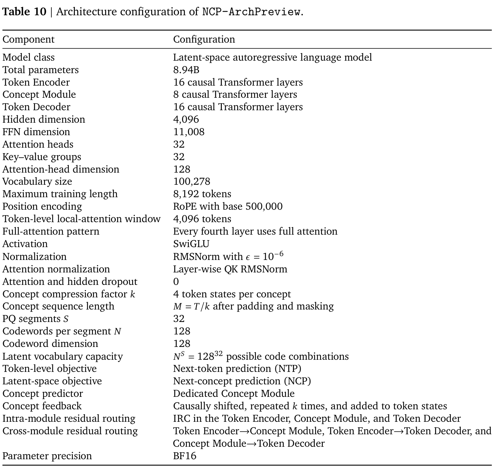
（接上页），使用固定的、针对特定能力的留出集。Stage-1 checkpoint 被纳入作为跨阶段参照，而配方选择基于三个 Stage-2 变体之间的比较。
扩展留出集由覆盖 63 个来源和六个领域的 177,202 条专家轨迹构成，对应约 100M 教师后缀 token。所有轨迹均由单个冻结的 Qwen3.7-Plus 教师在统一生成协议下产生。在评测候选 checkpoint 之前，提示、专家后缀、来源标识和能力注释已固定，以确保每个配方都在相同评分视图下比较。无效生成被排除，并保留一个约束更严格的可信子集，用于敏感性分析。
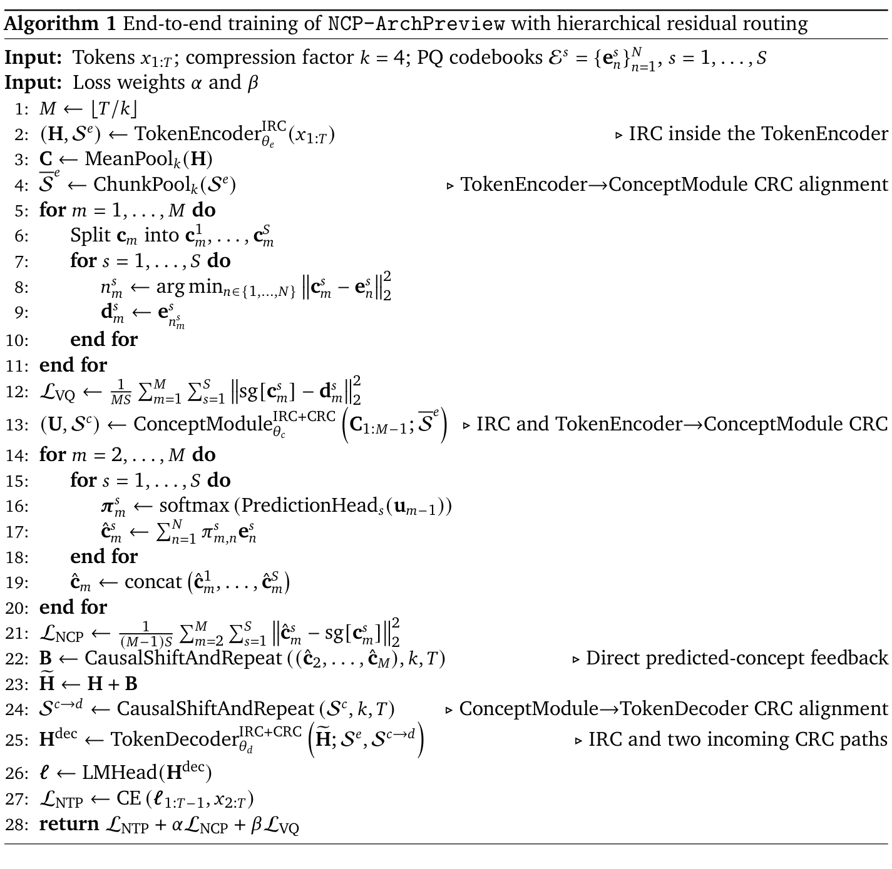
对于自由形式任务，我们对专家后缀采用 teacher forcing，并计算目标 token 的平均负对数似然：
首先在每个来源内对条目级分数求平均，再在每个能力叶节点内对来源级均值求平均。这种按来源平衡的聚合，防止大型基准仅凭样本数占据主导。函数生成、竞赛数学、学术 STEM 和逻辑推理被保留为独立测量，而非合并为单一跨领域分数。对于多项选择任务，我们使用任务自身的对比统计量：在每个 HellaSwag 条目上，将正确续写的字符归一化对数似然与最强干扰项比较。因此，轨迹 NLL 和选项间隔都只需要批量似然评测，无需自回归答案生成或辅助评判模型。
下游结果在统一评测协议下获得。Stage-1 模型使用标准预训练评测配置，以 GSM8K = 46.78 和 MATH-500 = 14.34 标识。三个 Stage-2 变体（V1/V2/V3）共享相同的推理与采样配置，使其相对性能成为配方比较的主要依据。Stage-1 仅用于提供跨阶段背景。除排序一致性外，我们还拟合最小二乘直线，评估代理测量中的差异是否反映下游性能差异的幅度。表 11 报告本分析使用的完整测量与下游结果。
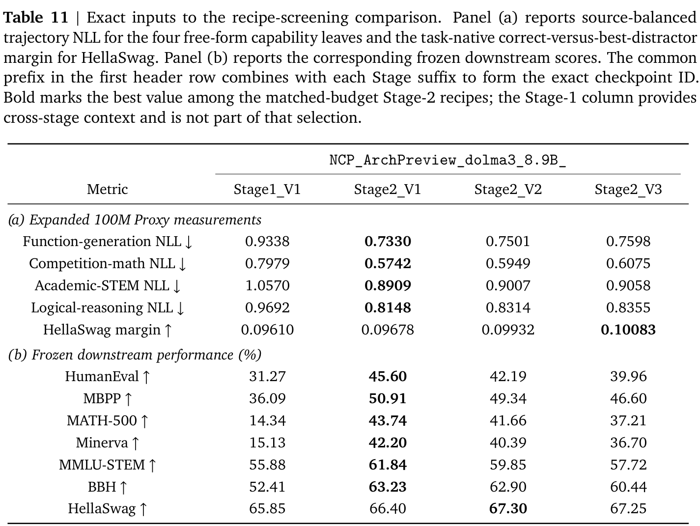
在全部四个自由形式能力叶节点上，Stage-2 变体表现出一致排序：V1 的 NLL 最低，其后是 V2 和 V3。对应下游基准呈现相同排序：代码的 HumanEval 和 MBPP，数学的 MATH-500 和 Minerva，学术 STEM 的 MMLU-STEM，以及逻辑推理的 BBH。因此，每种能力–基准映射在三个 Stage-2 两两比较中均一致。相较 V3，V1 的函数生成 NLL 降低 3.5%，竞赛数学降低 5.5%，学术 STEM 降低 1.6%，逻辑推理降低 2.5%。这些降幅对应下游提升：HumanEval 5.64 分、MBPP 4.31 分、MATH-500 6.52 分、Minerva 5.50 分、MMLU-STEM 4.11 分，以及 BBH 2.79 分。在可信子集上重复分析时，相同的四种代理指标排序仍被保留。
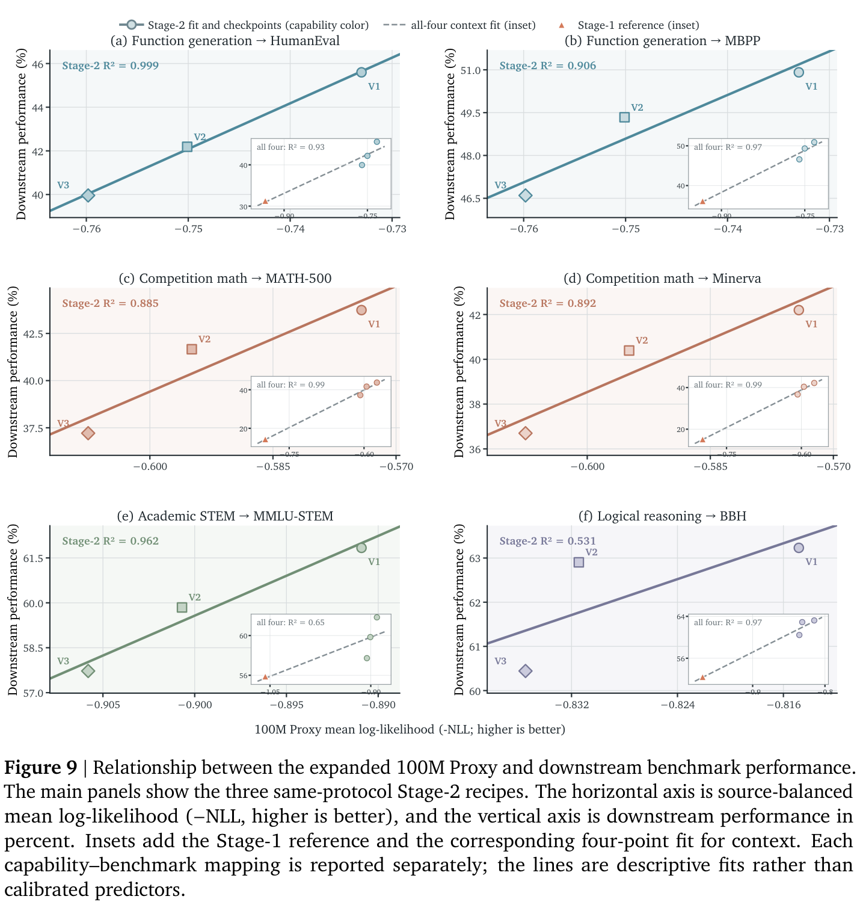
图 9 中的拟合关系通过刻画观察到的差异的相对幅度，补充了排序比较。Stage-2 的 \(R^2\) 为：HumanEval 0.999、MBPP 0.906、MATH-500 0.885、Minerva 0.892，以及 MMLU-STEM 0.962。BBH 的 \(R^2\) 较低，为 0.531：其配方排序仍然一致，但代理指标差异与下游得分差异不成比例。综合来看，预算对齐比较表明，在评测的自由形式能力上，V1 是三个 Stage-2 配方中最强的。这一结论适用于完整数据配方层面，并不将观察到的提升归因于混合数据中的任一单独来源。
HellaSwag 进一步说明了使评分统计量与任务形式匹配的重要性。其……（接下页）
（接上页）任务自身的选项间隔从 V1 的 0.09678 增加到 V2 的 0.09932 和 V3 的 0.10083。下游得分将 V2 与 V3 排在领先档，分别为 67.30 和 67.25，相比之下 V1 为 66.40。由于 V2 与 V3 下游仅相差 0.05 个百分点，我们在配方筛选时将其视为实质并列，而不从这一微小差距推断偏好。在这种决策粒度下，选项间隔可将领先的 V2/V3 档与 V1 区分，为多项选择评测提供更合适的概括。
在实践中，可以通过一次冻结模型的前向传播筛选新的中期训练配方，将其能力级 NLL 与任务自身的间隔指标和现有配方比较。将这些测量保留为能力向量，可以支持有针对性的配方选择，例如强调代码与数学，而不对跨领域指标施加任意全局聚合。现有证据覆盖三个 Stage-2 配方和一个跨阶段参照。因此，它支持在已评测设置内高效筛选配方，但并未确立对未见模型系列的校准预测，也未确立对单独数据组件的因果归因。
本节介绍我们如何开展 scaling 系列实验。首先选择若干 FLOPs 预算，并为每个预算设计模型规模与训练 token 之间的多种分配方案。尽管公式 \(C\approx6N_{\mathrm{param}}D\)（其中 \(N_{\mathrm{param}}\) 表示非 embedding 参数数量）已被广泛用于近似训练计算量，但对于各层激活频率不一致的架构，它可能不准确。在 NCP-ArchPreview 中，概念模块每个分块仅运行一次。因此，我们将总训练预算计算为：
\(C=F_{\mathrm{tok}}D\)，
其中，\(F_{\mathrm{tok}}\) 表示每个 token 的解析训练 FLOPs，\(D\) 表示训练 token 数量。FLOPs 估计排除 embedding 参数。
先前研究 [DeepSeek-AI, 2024] 发现，在固定 FLOPs 预算下，采用不同模型/数据分配方案的实验通常具有相似的最优超参数。受此观察启发，我们首先在每个 FLOPs 预算下选取一个代表模型，并在这些模型上搜索学习率与 batch 大小。确定最优学习率后，我们在其附近搜索相同 FLOPs 预算下其他模型的最佳学习率。图 10 的每个点均报告对应模型和 FLOPs 预算下，采用搜索到的最佳超参数获得的结果。表 12 列出了图中每个点的实验设置。
基准覆盖：表 1 的主要比较将越高越好的任务分数，与越低越好的似然分数分开。越高越好部分报告以下基准组：
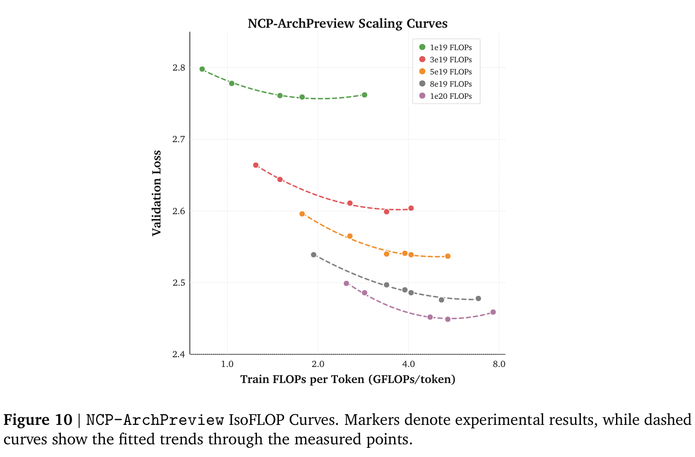
越低越好的似然部分报告以下基准上的每字节位数（BPB）：HumanEval Gold [Chen et al., 2021]、MBPP Gold [Austin et al., 2021]、MT-MBPP Gold [Cassano et al., 2022]、CoQA [Reddy et al., 2019]、DROP [Dua et al., 2019]、GSM8K Gold [Cobbe et al., 2021]、Jeopardy [soldni, 2024]、LAMBADA-OpenAI [Paperno et al., 2016]、Natural Questions [Kwiatkowski et al., 2019] 和 SQuAD [Rajpurkar et al., 2016]。“Gold” 后缀表示评测分配给参考续写的似然，而非自由形式生成。
上述分组标签仅用于组织报告结果，并不意味着同一组内所有基准共享相同评测形式。特别是，GenQA 组既包含按似然排序的选项任务，也包含零样本语言建模任务。
我们使用全局随机种子 42，进行少样本示例选择与生成。所有评测模型的提示模板、示范、答案选项、停止序列、评测划分和评分实现均保持固定。
多项选择与语言建模准确率评测。四项 MMLU 领域得分及综合 MMLU 得分，均使用测试集上的 5-shot 多项选择评测获得。每项领域得分对分配给该领域的 MMLU 学科做等权宏平均，而综合 MMLU 得分对全部 57 个学科做等权宏平均。MMLU-Pro 使用其 5-shot 多项选择形式评测。
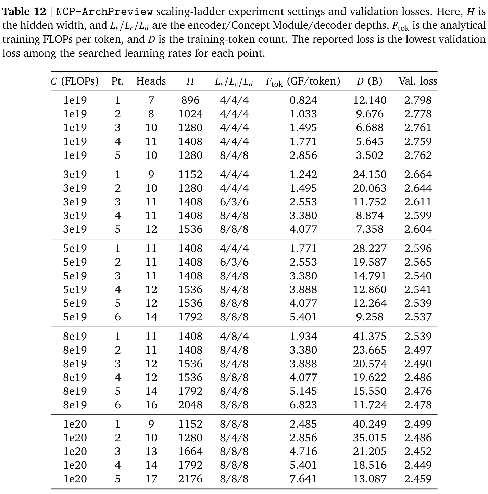
ARC-Easy、ARC-Challenge、CommonsenseQA、PIQA 和 SocialIQA 使用 5-shot 多项选择提示和原始选项准确率评测。HellaSwag 使用 5-shot 排序选项形式，答案似然按字符长度归一化；WinoGrande 则使用 5-shot 排序选项形式和原始准确率。MedMCQA 与 MedQA 使用 5-shot 排序选项评测，答案似然按 token 长度归一化。LAMBADA-Standard 与 LAMBADA-OpenAI 在表中越高越好部分，采用零样本、贪心下一 token 补全准确率评测。
标准答案续写与开放式似然评测。似然评测为 HumanEval Gold、MBPP Gold 和每个 MT-MBPP 语言使用三个示范；为 CoQA 和 LAMBADA-OpenAI 使用零个示范；为 DROP、Jeopardy、Natural Questions 和 SQuAD 使用五个示范；为 GSM8K Gold 使用八个示范。每项任务以其标准答案续写的平均负以 2 为底对数似然概括，并按 UTF-8 字节长度归一化，以每字节位数度量。三个代码似然基准使用……（接下页）
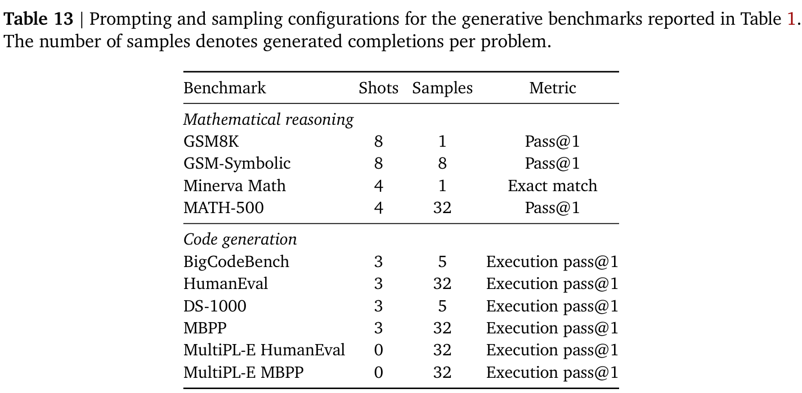
（接上页）评测框架提供的修正后的 BPB 实现。更低 BPB 表示更好的性能。这些结果及其 AVG，与越高越好的任务分数和 Overall AVG 分开保留。
生成式评测。表 13 列出需要自由形式生成的基准的提示与采样配置。样本数量表示每个问题生成的续写数量，与推理 batch 大小无关。
评分与聚合。数学答案使用基准专用答案提取器归一化。GSM8K 与 GSM-Symbolic 使用最后一个数字提取，Minerva Math 与 MATH-500 则使用各自对应的归一化数学等价规则。GSM-Symbolic 得分对其三个子集做等权宏平均，Minerva Math 得分对其七个学科类别做等权宏平均。
代码续写在隔离的、针对特定任务的环境中执行，使用对应官方测试用例与依赖。MultiPL-E HumanEval 和 MultiPL-E MBPP 分数各自对报告的六种编程语言做等权宏平均：C++、C#、Go、Java、JavaScript 和 PHP。
表 1 越高越好的结果以百分点报告。在该部分，各节 AVG 为以下组成结果的无权重平均：
越高越好的 Overall AVG 是上述 26 个组成基准结果的无权重平均，而非各节 AVG 的平均。它排除综合 MMLU 行，因为该行……（接下页）
（接上页）仅作为 57 个 MMLU 学科的汇总展示，并排除所有中间 AVG 行。
对于 MT-MBPP Gold，BPB 首先对其 17 个语言子集做等权宏平均。随后，越低越好的 AVG 是表中似然部分列出的十个基准级 BPB 结果的无权重平均。因此，MT-MBPP Gold 与其他九个基准中的每一个获得相同权重，而非它们权重的 17 倍。BPB AVG 独立计算，并从各领域 AVG 和越高越好的 Overall AVG 中排除。
展示的每个差值均计算为 NCP 分数减去对应 Vanilla 分数。因此，对于越高越好的任务分数，正差值表示改善；对于越低越好的 BPB 分数，负差值表示改善。
领域适配评测。对于第 5.1 节的 VQ 训练研究，代码适配模型在 HumanEval [Chen et al., 2021] 与 MBPP [Austin et al., 2021] 上评测，使用 EvalPlus [Liu et al., 2023] 提供的增强 HumanEval+ 与 MBPP+ 测试套件。数学适配模型在 GSM8K [Cobbe et al., 2021] 与 MATH-500 [Hendrycks et al., 2021b, Lightman et al., 2023] 上评测。知识适配模型在 TriviaQA [Joshi et al., 2017] 上使用其标准答案匹配协议评测。通用能力保留使用 MMLU [Hendrycks et al., 2021a]、ARC-Easy [Clark et al., 2018]、HellaSwag [Zellers et al., 2019] 和 Natural Questions [Kwiatkowski et al., 2019] 度量。这些辅助领域适配结果不纳入表 1 或其任一综合分数。
Stage-1 checkpoint 轨迹上的详细结果：表 14 展示 Stage-1 checkpoint 轨迹上的详细结果。
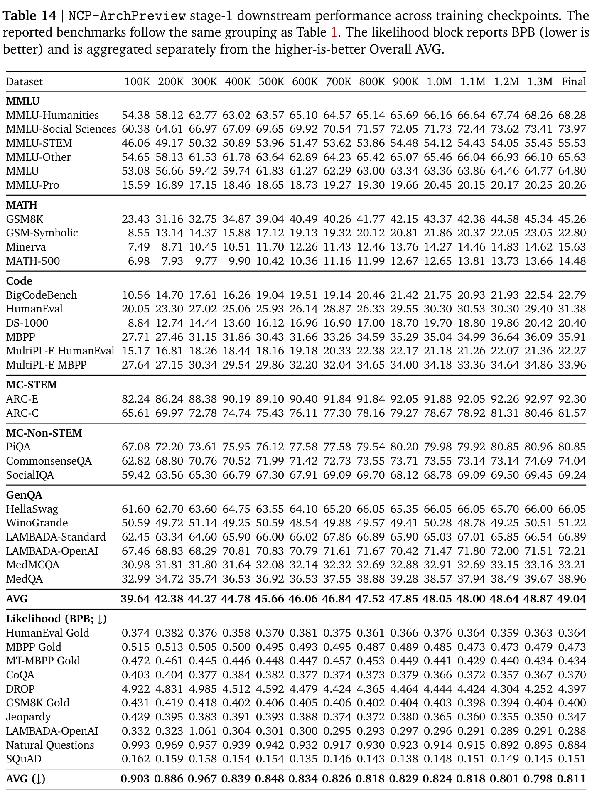